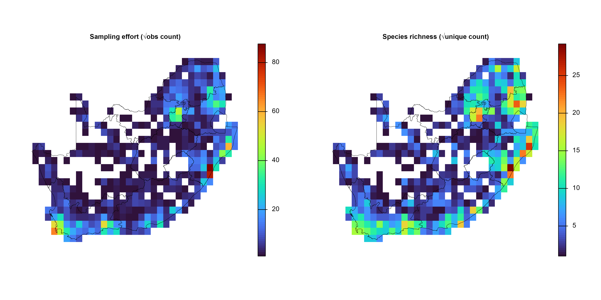
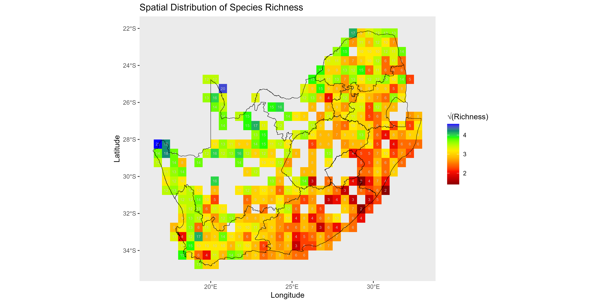
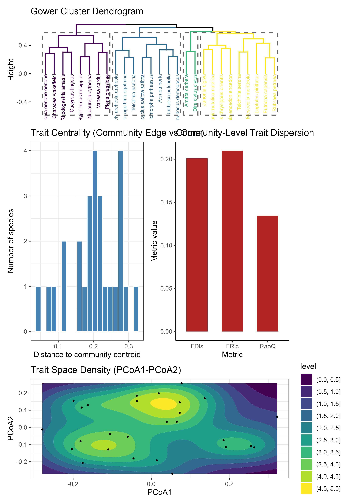
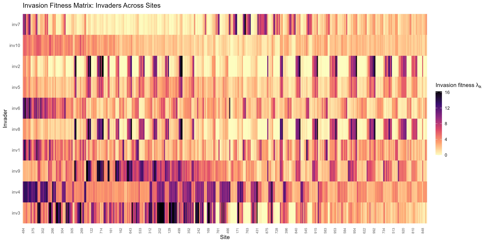
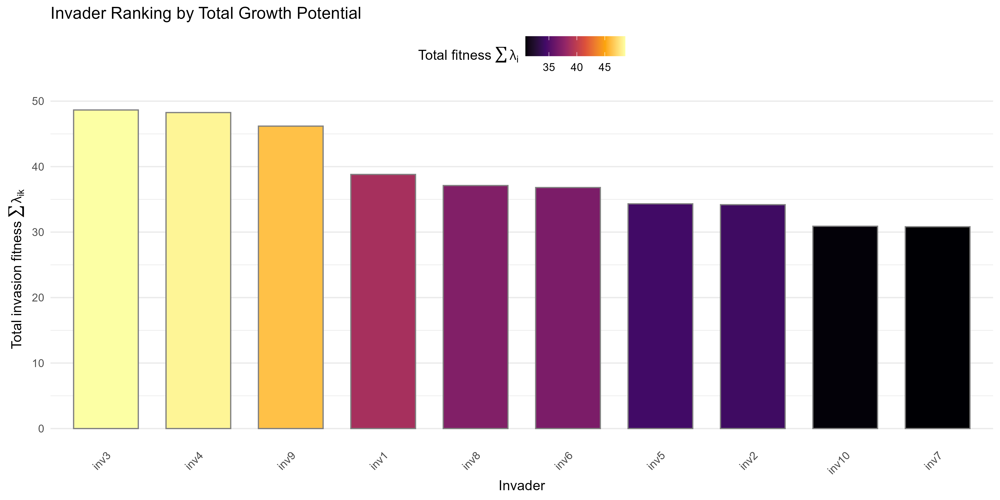
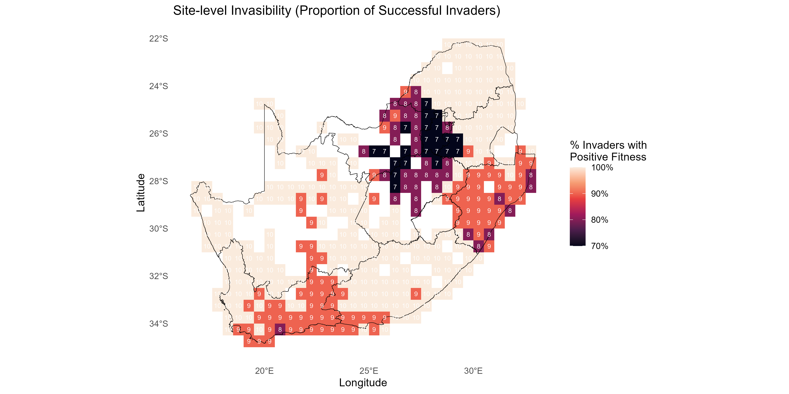
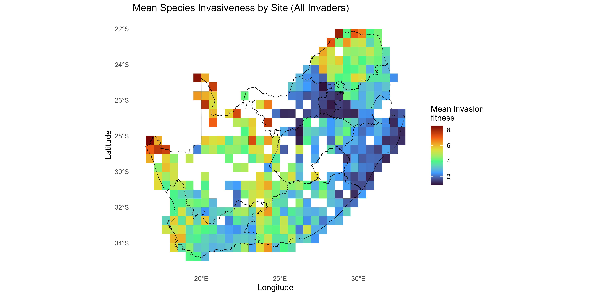
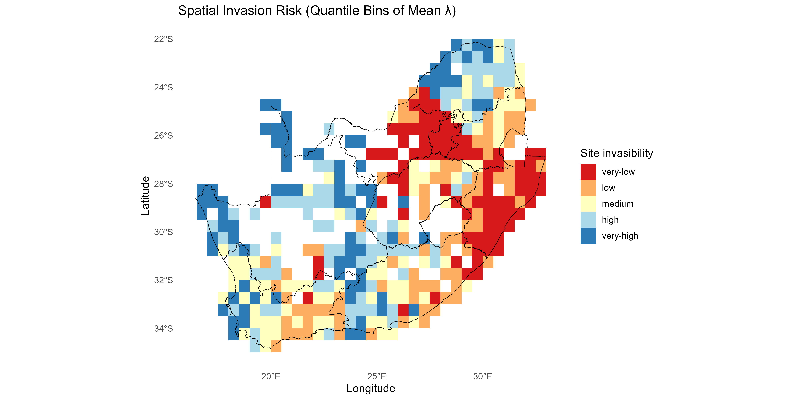
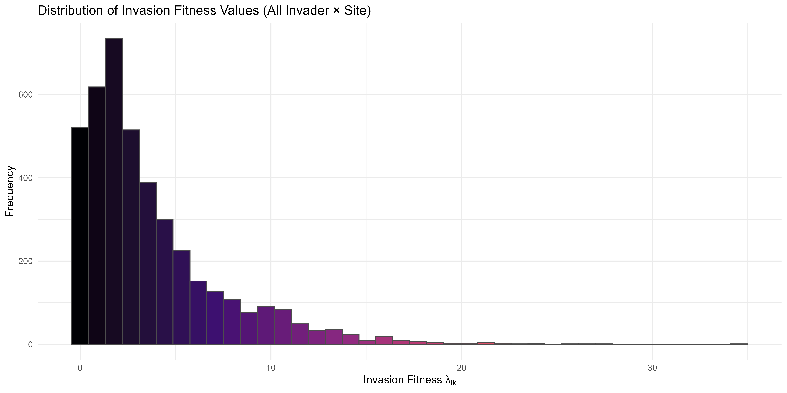
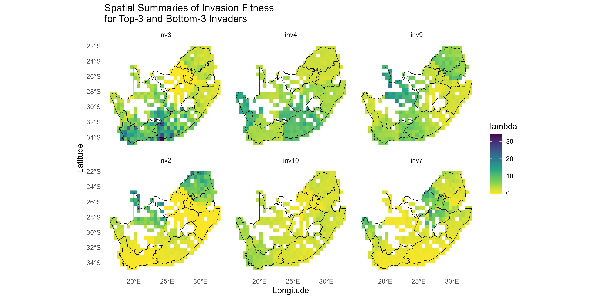

A Novel Framework to visualise trait dispersion and assess species invasiveness or site invasibility
1. Introduction
Biological invasions threaten global biodiversity. Invasive alien species (IAS) can expand rapidly and transform ecosystems. Because invasion dynamics arise from multiple drivers, from species interactions and traits to environmental gradients, we need rigorous, reproducible workflows to diagnose how species establish and spread. Recent theory, including trait-mediated ecological networks and invasion fitness, offers a coherent basis for integrating traits, environment, and biotic interactions (Hui et al., 2016; Hui et al., 2021). In the invasimap framework, invasion fitness is the low-density per-capita growth rate of an invader in a resident community. The low-density condition reflects a realistic introduction stage where the invader is rare and not self-limited, so establishment potential depends on environmental suitability and interspecific interactions. Positive values indicate growth from rarity; negative values indicate likely exclusion. This aligns with mutual invasibility and adaptive-dynamics invasion criteria.
Formal model and notation
We compute invasion fitness for invader at site as:
where:
- Predicted growth potential (intrinsic growth or abundance proxy for invader at site from the trait-environment model) is:
- Total raw competitive penalty is:
- Impact tensor (resident on invader in site ) is:
-
Competition kernel in trait space is: with as the trait dissimilarity (e.g., Gower) and as the trait bandwidth. While, the generalised trait distance/similarity is calculated as the the pairwise trait relationship (distance, similarity, or kernel value, depending on
kernelchoice) between species and across the entire species set, not restricted to invader-resident pairs. - Environmental filtering kernel is: where is the site environment vector and is the abundance-weighted environmental optimum of resident . is the environmental bandwidth.
- In the resident context, is the predicted equilibrium or typical abundance of resident at site , obtained from the fitted trait-environment model: where denotes the fitted response function (e.g., GLMM/GAM), are site covariates, summarizes species-level optima/traits, and are any additional predictors.
- Site-level invasibility and species-level invasiveness summaries of the fitness matrix are derived as follows:
Note: Different summaries can be applied - for example, can be the mean of over species , and/or can be the mean over sites or a sum over positive values only, depending on management emphasis.
2. Overview of the invasimap R package conceptual workflow
This tutorial walks through the full invasimap workflow for quantifying, mapping, and interpreting invasion fitness (fitness$lambda[i, s] in lambda_mat) in ecological communities, from raw data to actionable visualisations. The steps operationalise key ecological concepts: trait centrality (tdp$scores$centrality); trait dispersion (tdp$metrics_df); interaction strength (am$I_raw); competition (comp$a_ij); environmental filtering (ek$K_env); and summaries of invasion fitness including site-level invasibility and species-level invasiveness .
All computations use site-level environmental data (site_env), species occurrence or abundance (site_spp_pa / site_spp_ab) at coordinates (site_xy), and species functional traits (spp_trait) to parameterise trait–environment–interaction models consistent with invasion theory (Hui & Richardson, 2017; Hui et al., 2016, 2021).
The workflow is modular, with each step implemented by targeted functions in invasimap:
Setup & Dependencies Initialise the R environment, load packages, source helper functions, and set reproducibility controls.
Data Preparation Collect, clean, and standardise trait datasets (
spp_trait), including automated web-scraping withget_trait_data(), merging with trait tables, and type conversion. Produces a standardised trait data frame suitable for downstream analyses.-
Functional Trait Space Characterise species in a multidimensional trait space with
compute_trait_space(), calculating:-
Trait centrality [link TBD] —
tdp$scores$centralityviacompute_trait_similarity(). -
Trait dispersion [link TBD] —
tdp$metrics_dfviacompute_trait_dispersion(). - Pairwise trait distances stored as
trait_distorcomp$d_ij.
-
Trait centrality [link TBD] —
-
Trait–Environment Response Fit generalised linear mixed models linking traits and environmental covariates:
- Build GLMM formula with
build_glmm_formula(). - Simulate invader traits with
simulate_invaders(). - Predict intrinsic growth rates per site using
predict_invader_response(), returningfitness$r_mat.
- Build GLMM formula with
-
Interaction Strength Estimate pairwise biotic influence potentials:
- Compute (
am$I_raw) from viacompute_interaction_strength(). - Store general interaction distances (
cis$g_all). - Extract resident abundance context (
cis$Nstar).
- Compute (
Competition Transform distances into competition coefficients using the Gaussian trait kernel with bandwidth (
comp$sigma_t) viacompute_competition_kernel().-
Environmental Filtering Quantify match between species and site environments:
- Estimate environmental optima (
ek$env_opt). - Compute mismatch (
ek$env_dist) from site conditions (site_env). - Transform to environmental weights using bandwidth (
ek$sigma_e) viacompute_environment_kernel().
- Estimate environmental optima (
-
Invasion Fitness Computes low-density per-capita growth rates by integrating competition, environmental filtering, and intrinsic growth:
-
Matrix assembly —
assemble_matrices()collates: Fitness calculation —
compute_invasion_fitness()applies: , where the penalty is the sum of all resident impacts on invader at site .Variants — Optional penalty formulations include richness-scaled , abundance-weighted , and logistic-capped .
-
-
Visualisation & Interpretation Summarise into:
Note: Each module can be run independently if inputs are available, or sequentially to reproduce the full pipeline from data acquisition to invasion fitness mapping.
Step-by-step Workflow
1. Install and load invasimap
Install and load the invasimap package from GitHub, ensuring all functions are available for use in the workflow.
# # install remotes if needed
# install.packages("remotes")
# remotes::install_github("macSands/invasimap")
# Ensure the package is loaded when knitting
library(invasimap)
sessionInfo()$otherPkgs$invasimap$Version
# Make sure all the functions are loaded
devtools::load_all() # alternative during local development2. Load other R libraries
Load core libraries for spatial processing, biodiversity modelling, and visualization required across the invasimap analysis pipeline.
# Load essential packages
# library(tidyverse)
# --- Data Wrangling and Manipulation ---
library(dplyr) # Tidy data manipulation verbs (mutate, select, filter, etc.)
library(tidyr) # Reshape data (wide ↔ long, pivot functions)
library(tibble) # Modern lightweight data frames (tibble objects)
library(purrr) # Functional iteration (map(), etc.)
# --- String and Factor Utilities ---
library(stringr) # String pattern matching and manipulation (str_detect, etc.)
library(fastDummies) # Quickly create dummy/one-hot variables for factors
# --- Data Visualization ---
library(ggplot2) # Grammar-of-graphics plotting
library(viridis) # Colorblind-friendly palettes for ggplot2
# library(lattice) # Trellis (multi-panel) graphics
library(factoextra) # Visualize clustering and multivariate analyses, fviz_nbclust / silhouettes
# library(RColorBrewer)
# --- Spatial Data ---
library(sf) # Handling and plotting spatial vector data (simple features)
library(terra) # Raster and spatial data operations
# --- Statistical and Ecological Modelling ---
library(glmmTMB) # Fit GLMMs (Generalized Linear Mixed Models), e.g., Tweedie, NB, Poisson
library(MASS) # Statistical functions and kernel density estimation (kde2d, etc.)
library(cluster) # Clustering algorithms, Gower distance, diagnostics
# library(vegan) # Community ecology, ordination (PCoA, diversity metrics)
library(geometry) # Convex hulls, volumes, and related geometry calculations
library(ClustGeo) # for spatially constrained clustering
# --- Model Performance and Diagnostics ---
# library(performance) # Model checking, diagnostics, and performance metrics
# options(warn = -1)3. Data access and preparation using dissmapr
To acquire and prepare species occurrence data for biodiversity modelling using the dissmapr package, a series of modular functions streamline the workflow from raw observations to spatially aligned environmental predictors.
3.1. Install dissmapr
Install and load the dissmapr package from GitHub, ensuring all functions are available for use in the workflow.
# # install remotes if needed
# install.packages("remotes")
# remotes::install_github("macSands/dissmapr")
# Ensure the package is loaded
library(dissmapr)
sessionInfo()$otherPkgs$dissmapr$Version
#> [1] "0.1.0"3.2. Import and harmonise biodiversity-occurrence data
The process begins with dissmapr::get_occurrence_data(), which imports biodiversity records, such as a GBIF butterfly dataset for South Africa, and harmonizes them into standardised formats. Input sources can include local CSV files, URLs, or zipped GBIF downloads. The function filters data by taxon and region, returning both raw records and site-by-species matrices in presence-absence or abundance form.
# Use local GBIF data
bfly_data <- dissmapr::get_occurrence_data(
data = system.file("extdata", "gbif_butterflies.csv", package = "invasimap"),
source_type = "local_csv",
sep = "\t"
)
# Check results but only a subset of columns to fit in console
dim(bfly_data)
#> [1] 81825 52
# str(bfly_data[,c(51,52,22,23,1,14,16,17,30)])
head(bfly_data[, c(51, 52, 22, 23, 1, 14, 16, 17, 30)])
#> site_id pa y x gbifID verbatimScientificName
#> 1 1 1 -34.42086 19.24410 923051749 Pieris brassicae
#> 2 2 1 -33.96044 18.75564 922985630 Pieris brassicae
#> 3 3 1 -33.91651 18.40321 922619348 Papilio demodocus subsp. demodocus
#> 4 1 1 -34.42086 19.24410 922426210 Mylothris agathina subsp. agathina
#> 5 4 1 -34.35024 18.47488 921650584 Eutricha capensis
#> 6 5 1 -33.58570 25.65097 921485695 Drepanogynis bifasciata
#> countryCode locality
#> 1 ZA Hermanus
#> 2 ZA Polkadraai Road
#> 3 ZA Signal Hill
#> 4 ZA Hermanus
#> 5 ZA Cape of Good Hope / Cape Point Area, South Africa
#> 6 ZA Kudu Ridge Game Lodge
#> eventDate
#> 1 2012-10-13T00:00
#> 2 2012-11-01T00:00
#> 3 2012-10-31T00:00
#> 4 2012-10-13T00:00
#> 5 2012-10-30T00:00
#> 6 2012-10-23T00:00
# Use local data loaded into the environment as a data.frame
# local_df = read.csv(system.file("extdata", "site_species.csv", package = "dissmapr")
# head(local_df)
# bfly_data = get_occurrence_data(
# data = local_df,
# source_type = 'data_frame')
# # Use local .csv file in `invasimap` package
# bfly_data = get_occurrence_data(
# data = system.file("extdata", "site_species.csv", package = "invasimap"),
# source_type = 'local_csv')
#
# # Check results but only a subset of columns to fit in console
# dim(bfly_data)
# # str(bfly_data)
# head(bfly_data)3.3. Format biodiversity records to long/wide formats
Next, dissmapr::format_df() restructures the raw records into tidy long and wide formats. This assigns unique site IDs, extracts key fields (coordinates, species names, observation values), and prepares two main outputs: site_obs (long format for mapping) and site_spp (wide format for species-level analysis).
# Continue from GBIF data
bfly_result <- dissmapr::format_df(
data = bfly_data, # A `data.frame` of biodiversity records
species_col = "verbatimScientificName", # Name of species column (required for `"long"`)
value_col = "pa", # Name of value column (e.g. presence/abundance; for `"long"`)
extra_cols = NULL, # Character vector of other columns to keep
format = "long" # Either`"long"` or `"wide"`
)
# # Continue using local data
# bfly_result = dissmapr::format_df(
# data = bfly_data, # A `data.frame` of biodiversity records
# species_col = 'sp_name', # Name of species column (required for `"long"`)
# value_col = 'count' # Name of value column (e.g. presence/abundance; for `"long"`)
# )
# Check `bfly_result` structure
str(bfly_result, max.level = 1)
#> List of 2
#> $ site_obs:'data.frame': 79953 obs. of 5 variables:
#> $ site_spp: tibble [56,090 × 2,871] (S3: tbl_df/tbl/data.frame)
# Optional: Create new objects from list items
site_obs <- bfly_result$site_obs
site_spp <- bfly_result$site_spp
# Check results
dim(site_obs)
#> [1] 79953 5
head(site_obs)
#> site_id x y species value
#> 1 1 19.24410 -34.42086 Pieris brassicae 1
#> 2 2 18.75564 -33.96044 Pieris brassicae 1
#> 3 3 18.40321 -33.91651 Papilio demodocus subsp. demodocus 1
#> 4 1 19.24410 -34.42086 Mylothris agathina subsp. agathina 1
#> 5 4 18.47488 -34.35024 Eutricha capensis 1
#> 6 5 25.65097 -33.58570 Drepanogynis bifasciata 1
dim(site_spp)
#> [1] 56090 2871
head(site_spp[, 1:6])
#> # A tibble: 6 × 6
#> site_id x y `Mylothris agathina subsp. agathina` `Pieris brassicae`
#> <int> <dbl> <dbl> <dbl> <dbl>
#> 1 1 19.2 -34.4 1 1
#> 2 2 18.8 -34.0 0 1
#> 3 3 18.4 -33.9 0 0
#> 4 4 18.5 -34.4 0 0
#> 5 5 25.7 -33.6 0 0
#> 6 6 22.2 -33.6 0 0
#> # ℹ 1 more variable: `Tarucus thespis` <dbl>
#### Get parameters from processed data to use later
# Number of species
(n_sp <- dim(site_spp)[2] - 3)
#> [1] 2868
# Species names
sp_cols <- names(site_spp)[-c(1:3)]
sp_cols[1:10]
#> [1] "Mylothris agathina subsp. agathina" "Pieris brassicae"
#> [3] "Tarucus thespis" "Acraea horta"
#> [5] "Danaus chrysippus" "Papilio demodocus subsp. demodocus"
#> [7] "Eutricha capensis" "Mesocelis monticola"
#> [9] "Vanessa cardui" "Cuneisigna obstans"3.4. Generate spatial grid and gridded summaries
To integrate the data spatially, dissmapr::generate_grid() overlays a user-defined spatial lattice (e.g. 0.5° grid), aggregates biodiversity observations per grid cell, and computes standardised metrics such as species richness and observation effort. Outputs include gridded species matrices (grid_spp, grid_spp_pa), a spatial polygon (grid_sf), and raster layers (grid_r), enabling downstream spatial modelling.
# 1. Load the national boundary
rsa <- sf::st_read(system.file("extdata", "rsa.shp", package = "invasimap"))
#> Reading layer `rsa' from data source
#> `D:\Methods\R\myR_Packages\cleanVersions\invasimap\inst\extdata\rsa.shp'
#> using driver `ESRI Shapefile'
#> Simple feature collection with 11 features and 8 fields
#> Geometry type: MULTIPOLYGON
#> Dimension: XY
#> Bounding box: xmin: 16.45189 ymin: -34.83417 xmax: 32.94498 ymax: -22.12503
#> Geodetic CRS: WGS 84
# 2. Choose a working resolution
res <- 0.5 # decimal degrees° (≈ 55 km at the equator)
# 3. Convert the AoI to a 'terra' vector
rsa_vect <- terra::vect(rsa)
# 4. Initialise a blank raster template
grid <- terra::rast(rsa_vect, resolution = res, crs = terra::crs(rsa_vect))
# 5. Populate the raster with placeholder values
terra::values(grid) <- 1
# 6. Clip the raster to the AoI
grid_masked <- terra::mask(grid, rsa_vect)
# 7. Generate a 0.5° grid summary for the point dataset `site_spp`
grid_list <- dissmapr::generate_grid(
data = site_spp, # point data with x/y + species columns
x_col = "x", # longitude column
y_col = "y", # latitude column
grid_size = 0.5, # cell size in degrees
sum_cols = 4:ncol(site_spp), # columns to aggregate * could also use `names(site_spp)[4:ncol(site_spp)]`
crs_epsg = 4326 # WGS84
)
# Inspect the returned list
str(grid_list, max.level = 1)
#> List of 4
#> $ grid_r :S4 class 'SpatRaster' [package "terra"]
#> $ grid_sf :Classes 'sf' and 'data.frame': 1110 obs. of 8 variables:
#> ..- attr(*, "sf_column")= chr "geometry"
#> ..- attr(*, "agr")= Factor w/ 3 levels "constant","aggregate",..: NA NA NA NA NA NA NA
#> .. ..- attr(*, "names")= chr [1:7] "centroid_lon" "centroid_lat" "grid_id" "mapsheet" ...
#> $ grid_spp : tibble [415 × 2,874] (S3: tbl_df/tbl/data.frame)
#> $ grid_spp_pa: tibble [415 × 2,874] (S3: tbl_df/tbl/data.frame)
# (Optional) Promote list items to named objects
grid_r <- grid_list$grid_r$grid_id # raster
grid_sf <- grid_list$grid_sf # polygons for mapping or joins
grid_spp <- grid_list$grid_spp # tabular summary per cell
grid_spp_pa <- grid_list$grid_spp_pa # presence/absence summary
# Quick checks
dim(grid_sf) # ; head(grid_sf)
#> [1] 1110 8
dim(grid_spp) # ; head(grid_spp[, 1:8])
#> [1] 415 2874
dim(grid_spp_pa) # ; head(grid_spp_pa[, 1:8])
#> [1] 415 2874
# 1. Extract & stretch the layers
effRich_r <- sqrt(grid_list$grid_r[[c("obs_sum", "spp_rich")]])
# 2. Open a 1×2 layout and plot each layer + outline
old_par <- par(
mfrow = c(1, 2), # multi‐figure by row: 1 row and 2 columns
mar = c(1, 1, 1, 2)
) # margins sizes: bottom (1 lines)|left (1)|top (1)|right (2)
for (i in 1:2) {
plot(effRich_r[[i]],
col = viridisLite::turbo(100),
colNA = NA,
axes = FALSE,
main = c(
"Sampling effort (√obs count)",
"Species richness (√unique count)"
)[i],
cex.main = 0.8
) # ← smaller title)
plot(terra::vect(rsa), add = TRUE, border = "black", lwd = 0.4)
}
par(old_par) # reset plotting parameters3.5. Retrieve, crop, resample, and link environmental rasters to sampling sites
Environmental predictors are appended using dissmapr::get_enviro_data(), which buffers the grid, downloads raster data (e.g. WorldClim bioclimatic variables), resamples it, and links values to grid-cell centroids. This produces both a site-by-environment data frame (env_df) and a SpatRaster object (env_r), aligning biological and environmental data.
Begin by reading in a predefined target species list, then filter a site-by-species dataset (grid_spp) to retain only relevant species observations, and reshape the data for further analysis. This produces both a filtered long-format dataset (grid_obs) and a cleaned wide-format site-by-species matrix (grid_spp).
# Read in target species list
species <- read.csv(system.file("extdata",
"rsa_butterfly_species_names_n27_100plus.csv",
package = "invasimap"
), stringsAsFactors = FALSE)$species
# Filter `grid_spp` and convert to long-format
grid_obs <- grid_spp %>%
dplyr::select(-mapsheet) %>% # Drop mapsheet metadata
pivot_longer(
cols = -c(grid_id, centroid_lon, centroid_lat, obs_sum, spp_rich), # Keep core metadata columns only
names_to = "species",
values_to = "count",
values_drop_na = TRUE
) %>%
filter(
# obs_sum > 100, # Only high-observation sites
count > 0, # Remove absent species
species %in% !!species # Keep only target species
) %>%
rename(
site_id = grid_id, # Change 'grid_id' to 'site_id'
x = centroid_lon, # Change 'centroid_lon' to 'x'
y = centroid_lat # Change 'centroid_lat' to 'y'
) %>%
relocate(site_id, x, y, obs_sum, spp_rich, species, count)
dim(grid_obs)
#> [1] 1737 7
head(grid_obs)
#> # A tibble: 6 × 7
#> site_id x y obs_sum spp_rich species count
#> <chr> <dbl> <dbl> <dbl> <dbl> <chr> <dbl>
#> 1 1027 29.2 -22.3 41 31 Utetheisa pulchella 1
#> 2 1029 30.3 -22.3 7 7 Danaus chrysippus orientis 1
#> 3 1029 30.3 -22.3 7 7 Telchinia serena 1
#> 4 1031 31.3 -22.3 107 76 Vanessa cardui 1
#> 5 1031 31.3 -22.3 107 76 Utetheisa pulchella 2
#> 6 1031 31.3 -22.3 107 76 Hypolimnas misippus 2
length(unique(grid_obs$species))
#> [1] 27
length(unique(grid_obs$site_id))
#> [1] 314
# Reshape site-by-species matrix to wide format and clean
grid_spp <- grid_obs %>%
pivot_wider(
names_from = species,
values_from = count,
values_fill = 0 # Replace missing counts with 0
)
dim(grid_spp)
#> [1] 314 32
# head(grid_spp)Then proceed to retrieve and process environmental data using dissmapr::get_enviro_data(). In the example below, 19 bioclimatic variables are downloaded from WorldClim v2.1 (≈10 km resolution) for all site centroids in the grid_spp dataset. It performs the following steps:
- Retrieves WorldClim “bio” variables via the
geodatainterface. - Buffers the area of interest (AOI) by 10 km.
- Retains site-level metadata (
obs_sum,spp_rich) and excludes species columns.
# Retrieve 19 bioclim layers (≈10-km, WorldClim v2.1) for all grid centroids
data_path <- "inst/extdata" # cache folder for rasters
enviro_list <- dissmapr::get_enviro_data(
data = grid_spp, # centroids + obs_sum + spp_rich
buffer_km = 10, # pad the AOI slightly
source = "geodata", # WorldClim/SoilGrids interface
var = "bio", # bioclim variable set
res = 5, # 5-arc-min ≈ 10 km
grid_r = grid_r, # To set resampling resolution, if necessary
path = data_path,
sp_cols = 7:ncol(grid_spp), # ignore species columns
ext_cols = c("obs_sum", "spp_rich") # carry effort & richness through
)
# Quick checks
str(enviro_list, max.level = 1)
#> List of 3
#> $ env_rast:S4 class 'SpatRaster' [package "terra"]
#> $ sites_sf: sf [314 × 2] (S3: sf/tbl_df/tbl/data.frame)
#> ..- attr(*, "sf_column")= chr "geometry"
#> ..- attr(*, "agr")= Factor w/ 3 levels "constant","aggregate",..: NA
#> .. ..- attr(*, "names")= chr "site_id"
#> $ env_df : tibble [314 × 24] (S3: tbl_df/tbl/data.frame)
# (Optional) Assign concise layer names for readability
# Find names here https://www.worldclim.org/data/bioclim.html
names_env <- c(
"temp_mean", "mdr", "iso", "temp_sea", "temp_max", "temp_min",
"temp_range", "temp_wetQ", "temp_dryQ", "temp_warmQ",
"temp_coldQ", "rain_mean", "rain_wet", "rain_dry",
"rain_sea", "rain_wetQ", "rain_dryQ", "rain_warmQ", "rain_coldQ"
)
names(enviro_list$env_rast) <- names_env
# (Optional) Promote frequently-used objects
env_r <- enviro_list$env_rast # cropped climate stack
env_df <- enviro_list$env_df # site × environment data-frame
# Quick checks
env_r
#> class : SpatRaster
#> size : 30, 37, 19 (nrow, ncol, nlyr)
#> resolution : 0.5, 0.5 (x, y)
#> extent : 15.5, 34, -36, -21 (xmin, xmax, ymin, ymax)
#> coord. ref. : lon/lat WGS 84 (EPSG:4326)
#> source(s) : memory
#> names : temp_mean, mdr, iso, temp_sea, temp_max, temp_min, ...
#> min values : 9.779773, 8.977007, 47.10606, 228.9986, 19.92147, -4.110302, ...
#> max values : 24.406433, 18.352308, 64.92966, 653.4167, 36.19497, 12.005042, ...
dim(env_df)
#> [1] 314 24
head(env_df)
#> # A tibble: 6 × 24
#> site_id x y bio01 bio02 bio03 bio04 bio05 bio06 bio07 bio08 bio09
#> <chr> <dbl> <dbl> <dbl> <dbl> <dbl> <dbl> <dbl> <dbl> <dbl> <dbl> <dbl>
#> 1 1027 29.2 -22.3 21.8 14.5 55.1 430. 32.6 6.30 26.3 26.2 15.9
#> 2 1029 30.3 -22.3 22.8 13.9 58.0 359. 32.7 8.79 23.9 26.5 17.8
#> 3 1031 31.3 -22.3 24.2 14.2 61.3 326. 34.2 10.9 23.2 27.5 19.7
#> 4 117 18.2 -34.3 20.2 11.8 56.8 317. 29.8 9.29 20.5 19.9 19.8
#> 5 118 18.7 -34.3 16.2 9.28 52.3 309. 25.4 7.65 17.7 12.4 19.8
#> 6 119 19.3 -34.3 15.8 10.2 53.5 321. 25.8 6.67 19.2 11.8 19.6
#> # ℹ 12 more variables: bio10 <dbl>, bio11 <dbl>, bio12 <dbl>, bio13 <dbl>,
#> # bio14 <dbl>, bio15 <dbl>, bio16 <dbl>, bio17 <dbl>, bio18 <dbl>,
#> # bio19 <dbl>, obs_sum <dbl>, spp_rich <dbl>
# Build the final site × environment table
grid_env <- env_df %>%
dplyr::select(
site_id, x, y,
obs_sum, spp_rich, dplyr::everything()
) %>%
mutate(across(
.cols = -c(site_id, x, y, obs_sum, spp_rich), # all other columns
.fns = ~ as.numeric(scale(.x)), # Scale bio
.names = "{.col}" # keep same names
))
str(grid_env, max.level = 1)
#> tibble [314 × 24] (S3: tbl_df/tbl/data.frame)
head(grid_env)
#> # A tibble: 6 × 24
#> site_id x y obs_sum spp_rich bio01 bio02 bio03 bio04 bio05 bio06
#> <chr> <dbl> <dbl> <dbl> <dbl> <dbl> <dbl> <dbl> <dbl> <dbl> <dbl>
#> 1 1027 29.2 -22.3 41 31 1.75 0.274 -0.309 0.272 1.24 0.605
#> 2 1029 30.3 -22.3 7 7 2.20 -0.0315 0.616 -0.450 1.27 1.28
#> 3 1031 31.3 -22.3 107 76 2.78 0.150 1.68 -0.792 1.79 1.87
#> 4 117 18.2 -34.3 4246 231 1.08 -1.05 0.236 -0.883 0.241 1.42
#> 5 118 18.7 -34.3 2202 215 -0.628 -2.25 -1.21 -0.975 -1.30 0.973
#> 6 119 19.3 -34.3 989 173 -0.799 -1.79 -0.838 -0.842 -1.15 0.706
#> # ℹ 13 more variables: bio07 <dbl>, bio08 <dbl>, bio09 <dbl>, bio10 <dbl>,
#> # bio11 <dbl>, bio12 <dbl>, bio13 <dbl>, bio14 <dbl>, bio15 <dbl>,
#> # bio16 <dbl>, bio17 <dbl>, bio18 <dbl>, bio19 <dbl>3.6. Remove highly correlated predictors (optional)
Finally, dissmapr::rm_correlated() optionally reduces multicollinearity by filtering out highly correlated predictors based on a threshold (e.g. r > 0.70), improving model stability and interpretability. Together, these functions provide a reproducible and scalable pipeline for preparing ecological datasets for spatial analysis.
# # (Optional) Rename BIO
# names(env_df) = c("grid_id", "centroid_lon", "centroid_lat", names_env, "obs_sum", "spp_rich")
#
# # Run the filter and compare dimensions
# # Filter environmental predictors for |r| > 0.70
# env_vars_reduced = dissmapr::rm_correlated(
# data = env_df[, 4:23], # drop ID + coord columns
# cols = NULL, # infer all numeric cols
# threshold = 0.70,
# plot = TRUE # show heat-map of retained vars
# )
#
# # Before vs after
# c(original = ncol(env_df[, c(4, 6:24)]),
# reduced = ncol(env_vars_reduced))4. Data access and preparation using invasimap
4.1. Retrieve and link trait and metadata for each species
This utility provides an automated pipeline for extracting and joining both biological trait data and rich metadata for any focal species. The function integrates several steps:
- Trait Table Lookup: Retrieves species’ trait data from a local trait table (CSV) or a TRY-style database, using fuzzy matching to ensure robust linkage even when there are minor naming inconsistencies.
- Wikipedia Metadata Scraping: Optionally augments each species entry with a taxonomic summary, higher taxonomy, and representative images scraped directly from Wikipedia.
- Image-based Color Palette Extraction: If enabled, downloads and processes public domain images to extract the most frequent colors, optionally removing green/white backgrounds to focus on diagnostic features.
- Flexible Output: Returns a single-row tibble with the species name, trait data, taxonomic metadata, image URL, and color palette - all harmonized for downstream analyses or visualization.
This function greatly simplifies the assembly of a unified species-trait-metadata table, which is essential for trait-based community ecology, macroecology, and biodiversity informatics projects.
# # Local trait data.frame version 1
# btfly_traits1 = read.csv(system.file("extdata", "Middleton_etal_2020_traits.csv", package = "invasimap"))
# str(btfly_traits1)
# length(unique(btfly_traits1$Species))
#
# # Github trait data.frame
# git_url = "https://raw.githubusercontent.com/RiesLabGU/LepTraits/main/consensus/consensus.csv"
# # Make sure inst/extdata exists then define destination
# dir.create("inst/extdata", recursive = TRUE, showWarnings = FALSE)
# destfile = file.path("inst", "extdata", "consensus.csv")
#
# # Download the raw CSV
# download.file(
# url = git_url,
# destfile = destfile,
# mode = "wb" # important on Windows
# )
#
# # 4. Read it from disk
# btfly_traits2 = read.csv(destfile, stringsAsFactors = FALSE)
# str(btfly_traits2)
# length(unique(btfly_traits2$Species))
#
# # Retrieve and join trait/metadata for all species in the observation set
# spp_traits = purrr::map_dfr(
# unique(grid_obs$species),
# ~get_trait_data(
# species = .x,
# remove_bg = FALSE,
# n_palette = 5,
# preview = FALSE,
# save_folder = NULL,
# do_summary = TRUE,
# do_taxonomy = TRUE,
# do_image = TRUE,
# do_palette = TRUE,
# use_try = FALSE,
# try_data = NULL,
# # local_trait_df = btfly_traits1,
# local_trait_df = btfly_traits2,
# local_species_col = 'Species',
# # github_url = git_url,
# max_dist = 1
# )
# )
# Local trait data.frame version 2
btfly_traits3 <- read.csv(system.file("extdata", "species_traits.csv", package = "invasimap"))
# btfly_traits3 = read.csv(system.file("extdata", "species_traits_sim.csv", package = "invasimap"))
str(btfly_traits3)
#> 'data.frame': 27 obs. of 21 variables:
#> $ species : chr "Acraea horta" "Amata cerbera" "Bicyclus safitza safitza" "Cacyreus lingeus" ...
#> $ trait_cont1 : num 0.83 0.874 -0.428 0.661 0.283 ...
#> $ trait_cont2 : num 0.811 -0.106 0.672 0.475 0.622 ...
#> $ trait_cont3 : num -0.922 0.498 0.355 -0.657 -0.478 ...
#> $ trait_cont4 : num -0.684 -0.282 0.291 0.552 0.127 ...
#> $ trait_cont5 : num 0.0715 -0.9955 0.2179 0.6736 0.503 ...
#> $ trait_cont6 : num 0.16 0.643 -0.773 0.529 0.247 ...
#> $ trait_cont7 : num 0.2035 -0.606 0.0705 -0.6409 -0.0962 ...
#> $ trait_cont8 : num -0.425 -0.611 0.568 -0.742 -0.742 ...
#> $ trait_cont9 : num 0.1493 -0.2933 0.0949 0.7854 -0.02 ...
#> $ trait_cont10: num -0.5772 0.0992 -0.036 -0.6811 -0.7008 ...
#> $ trait_cat11 : chr "wetland" "forest" "wetland" "wetland" ...
#> $ trait_cat12 : chr "diurnal" "nocturnal" "diurnal" "nocturnal" ...
#> $ trait_cat13 : chr "bivoltine" "multivoltine" "univoltine" "multivoltine" ...
#> $ trait_cat14 : chr "detritivore" "detritivore" "generalist" "nectarivore" ...
#> $ trait_cat15 : chr "migratory" "resident" "resident" "migratory" ...
#> $ trait_ord16 : int 4 1 4 3 4 1 1 4 1 1 ...
#> $ trait_ord17 : int 1 4 4 3 2 4 3 5 4 3 ...
#> $ trait_bin18 : int 1 1 1 0 1 1 1 1 0 0 ...
#> $ trait_bin19 : int 1 0 1 0 0 1 1 1 0 1 ...
#> $ trait_ord20 : chr "medium" "large" "medium" "medium" ...
# length(unique(btfly_traits3$species))
# Retrieve and join trait/metadata for all species in the observation set
spp_traits <- purrr::map_dfr(
unique(grid_obs$species),
~ get_trait_data(
species = .x,
n_palette = 5,
preview = FALSE,
do_summary = TRUE,
do_taxonomy = TRUE,
do_image = TRUE,
do_palette = TRUE,
local_trait_df = btfly_traits3,
local_species_col = "species",
max_dist = 1
)
)
# The final output combines trait data, taxonomic info, Wikipedia summary, images, and color palette for each species.
# This integrated dataset supports multi-faceted biodiversity, trait, and visualization analyses.
str(spp_traits)
#> tibble [27 × 29] (S3: tbl_df/tbl/data.frame)
#> $ species : chr [1:27] "Utetheisa pulchella" "Danaus chrysippus orientis" "Telchinia serena" "Vanessa cardui" ...
#> $ summary : chr [1:27] "Utetheisa pulchella, the crimson-speckled flunkey, crimson-speckled footman, or crimson-speckled moth, is a mot"| __truncated__ NA "Acraea serena, the dancing acraea, is a butterfly of the family Nymphalidae. It is found throughout Africa sout"| __truncated__ "Vanessa cardui is the most widespread of all butterfly species. It is commonly called the painted lady, or form"| __truncated__ ...
#> $ Kingdom : Named chr [1:27] "Animalia" NA "Animalia" "Animalia" ...
#> ..- attr(*, "names")= chr [1:27] "Kingdom" "Kingdom" "Kingdom" "Kingdom" ...
#> $ Phylum : Named chr [1:27] "Arthropoda" NA "Arthropoda" "Arthropoda" ...
#> ..- attr(*, "names")= chr [1:27] "Phylum" "Phylum" "Phylum" "Phylum" ...
#> $ Class : Named chr [1:27] "Insecta" NA "Insecta" "Insecta" ...
#> ..- attr(*, "names")= chr [1:27] "Class" "Class" "Class" "Class" ...
#> $ Order : Named chr [1:27] "Lepidoptera" NA "Lepidoptera" "Lepidoptera" ...
#> ..- attr(*, "names")= chr [1:27] "Order" "Order" "Order" "Order" ...
#> $ Family : Named chr [1:27] "Erebidae" NA "Nymphalidae" "Nymphalidae" ...
#> ..- attr(*, "names")= chr [1:27] "Family" "Family" "Family" "Family" ...
#> $ img_url : chr [1:27] "https://upload.wikimedia.org/wikipedia/commons/thumb/a/a6/Arctiidae_-_Utetheisa_pulchella.JPG/250px-Arctiidae_-"| __truncated__ NA "https://upload.wikimedia.org/wikipedia/commons/thumb/2/2a/Dancing_acraea_%28Acraea_serena%29_underside_Maputo.j"| __truncated__ "https://upload.wikimedia.org/wikipedia/commons/thumb/c/c8/0_Belle-dame_%28Vanessa_cardui%29_-_Echinacea_purpure"| __truncated__ ...
#> $ palette : chr [1:27] "#535509, #A59A47, #8C8012, #1D220C, #CCBF98" NA "#9C9C6D, #86885D, #E8E6CE, #534832, #B4862D" "#CC8242, #EA8FD3, #3A311F, #C65D9B, #6A5C42" ...
#> $ trait_cont1 : num [1:27] 0.0284 0.0382 -0.8351 -0.2196 0.314 ...
#> $ trait_cont2 : num [1:27] -0.203 -0.224 -0.307 0.569 0.666 ...
#> $ trait_cont3 : num [1:27] -0.9969 0.0288 0.0288 0.1632 0.5191 ...
#> $ trait_cont4 : num [1:27] 0.48 -0.533 0.925 0.466 -0.39 ...
#> $ trait_cont5 : num [1:27] 0.8748 -0.0945 0.263 0.701 -0.9972 ...
#> $ trait_cont6 : num [1:27] 0.87 -0.703 0.36 0.101 0.559 ...
#> $ trait_cont7 : num [1:27] 0.586 -0.366 0.836 -0.733 0.459 ...
#> $ trait_cont8 : num [1:27] -0.0974 -0.8555 -0.8781 0.6775 -0.7754 ...
#> $ trait_cont9 : num [1:27] 0.123 -0.657 -0.865 -0.859 -0.373 ...
#> $ trait_cont10: num [1:27] 0.85009 -0.00145 -0.5899 0.77351 -0.62313 ...
#> $ trait_cat11 : chr [1:27] "wetland" "grassland" "forest" "forest" ...
#> $ trait_cat12 : chr [1:27] "diurnal" "diurnal" "nocturnal" "diurnal" ...
#> $ trait_cat13 : chr [1:27] "multivoltine" "univoltine" "multivoltine" "univoltine" ...
#> $ trait_cat14 : chr [1:27] "detritivore" "detritivore" "generalist" "generalist" ...
#> $ trait_cat15 : chr [1:27] "migratory" "migratory" "migratory" "resident" ...
#> $ trait_ord16 : int [1:27] 3 1 2 3 1 1 4 4 2 2 ...
#> $ trait_ord17 : int [1:27] 4 4 5 3 4 2 1 5 2 5 ...
#> $ trait_bin18 : int [1:27] 1 1 1 0 0 0 1 1 0 0 ...
#> $ trait_bin19 : int [1:27] 1 1 1 0 0 0 1 1 1 1 ...
#> $ trait_ord20 : chr [1:27] "small" "medium" "large" "large" ...
head(spp_traits)
#> # A tibble: 6 × 29
#> species summary Kingdom Phylum Class Order Family img_url palette trait_cont1
#> <chr> <chr> <chr> <chr> <chr> <chr> <chr> <chr> <chr> <dbl>
#> 1 Utethei… Utethe… Animal… Arthr… Inse… Lepi… Erebi… https:… #53550… 0.0284
#> 2 Danaus … <NA> <NA> <NA> <NA> <NA> <NA> <NA> <NA> 0.0382
#> 3 Telchin… Acraea… Animal… Arthr… Inse… Lepi… Nymph… https:… #9C9C6… -0.835
#> 4 Vanessa… Vaness… Animal… Arthr… Inse… Lepi… Nymph… https:… #CC824… -0.220
#> 5 Hypolim… Hypoli… Animal… Arthr… Inse… Lepi… Nymph… https:… #B2A79… 0.314
#> 6 Pieris … Pieris… Animal… Arthr… Inse… Lepi… Pieri… https:… #515A2… -0.765
#> # ℹ 19 more variables: trait_cont2 <dbl>, trait_cont3 <dbl>, trait_cont4 <dbl>,
#> # trait_cont5 <dbl>, trait_cont6 <dbl>, trait_cont7 <dbl>, trait_cont8 <dbl>,
#> # trait_cont9 <dbl>, trait_cont10 <dbl>, trait_cat11 <chr>,
#> # trait_cat12 <chr>, trait_cat13 <chr>, trait_cat14 <chr>, trait_cat15 <chr>,
#> # trait_ord16 <int>, trait_ord17 <int>, trait_bin18 <int>, trait_bin19 <int>,
#> # trait_ord20 <chr>
# Count how many non‐NA IDs
length(unique(btfly_traits3$species))
#> [1] 27
length(unique(grid_obs$species))
#> [1] 27
sum(!is.na(spp_traits$species))
#> [1] 274.2. Alternatively, load local combined site, environment, and trait data
# Read GBIF species occurrence with simulated traits and enviro data (one row per site-species combination)
site_env_spp <- read.csv(system.file("extdata", "site_env_spp_simulated.csv", package = "invasimap"))
# site_env_spp = read.csv(system.file("extdata", "site_env_spp_trt_sim.csv", package = "invasimap"))
dim(site_env_spp)
#> [1] 11205 36
str(site_env_spp)
#> 'data.frame': 11205 obs. of 36 variables:
#> $ site_id : int 1026 1026 1026 1026 1026 1026 1026 1026 1026 1026 ...
#> $ x : num 28.8 28.8 28.8 28.8 28.8 ...
#> $ y : num -22.3 -22.3 -22.3 -22.3 -22.3 ...
#> $ species : chr "Acraea horta" "Amata cerbera" "Bicyclus safitza safitza" "Cacyreus lingeus" ...
#> $ count : int 10 0 0 0 9 8 8 3 19 0 ...
#> $ trait_cont1 : num 0.83 0.874 -0.428 0.661 0.283 ...
#> $ trait_cont2 : num 0.811 -0.106 0.672 0.475 0.622 ...
#> $ trait_cont3 : num -0.922 0.498 0.355 -0.657 -0.478 ...
#> $ trait_cont4 : num -0.684 -0.282 0.291 0.552 0.127 ...
#> $ trait_cont5 : num 0.0715 -0.9955 0.2179 0.6736 0.503 ...
#> $ trait_cont6 : num 0.16 0.643 -0.773 0.529 0.247 ...
#> $ trait_cont7 : num 0.2035 -0.606 0.0705 -0.6409 -0.0962 ...
#> $ trait_cont8 : num -0.425 -0.611 0.568 -0.742 -0.742 ...
#> $ trait_cont9 : num 0.1493 -0.2933 0.0949 0.7854 -0.02 ...
#> $ trait_cont10: num -0.5772 0.0992 -0.036 -0.6811 -0.7008 ...
#> $ trait_cat11 : chr "wetland" "forest" "wetland" "wetland" ...
#> $ trait_cat12 : chr "diurnal" "nocturnal" "diurnal" "nocturnal" ...
#> $ trait_cat13 : chr "bivoltine" "multivoltine" "univoltine" "multivoltine" ...
#> $ trait_cat14 : chr "detritivore" "detritivore" "generalist" "nectarivore" ...
#> $ trait_cat15 : chr "migratory" "resident" "resident" "migratory" ...
#> $ trait_ord16 : int 4 1 4 3 4 1 1 4 1 1 ...
#> $ trait_ord17 : int 1 4 4 3 2 4 3 5 4 3 ...
#> $ trait_bin18 : int 1 1 1 0 1 1 1 1 0 0 ...
#> $ trait_bin19 : int 1 0 1 0 0 1 1 1 0 1 ...
#> $ trait_ord20 : chr "medium" "large" "medium" "medium" ...
#> $ env1 : num 2.2 2.2 2.2 2.2 2.2 ...
#> $ env2 : num 0.647 0.647 0.647 0.647 0.647 ...
#> $ env3 : num -0.491 -0.491 -0.491 -0.491 -0.491 ...
#> $ env4 : num -0.793 -0.793 -0.793 -0.793 -0.793 ...
#> $ env5 : num 0.822 0.822 0.822 0.822 0.822 ...
#> $ env6 : num 1.55 1.55 1.55 1.55 1.55 ...
#> $ env7 : num 0.419 0.419 0.419 0.419 0.419 ...
#> $ env8 : num -1.05 -1.05 -1.05 -1.05 -1.05 ...
#> $ env9 : num -0.0537 -0.0537 -0.0537 -0.0537 -0.0537 ...
#> $ env10 : num 0.933 0.933 0.933 0.933 0.933 ...
#> $ cat11_num : int -1 1 -1 -1 1 0 1 -1 1 0 ...
# Check the results
names(grid_obs)
#> [1] "site_id" "x" "y" "obs_sum" "spp_rich" "species" "count"
# names(grid_env)5. Model Inputs
Shape your data so every row is “one species at one site,” with that species’ traits and that site’s environment.
5.1. Format site-locations
This section isolates the unique spatial coordinates for each sampling site. The resulting table (site_xy) will be used for spatial mapping, distance calculations, and for merging environmental and biodiversity metrics with precise locations.
# Create site coordinate table i.e. # Unique site coordinates
site_xy <- site_env_spp %>%
dplyr::select(site_id, x, y) %>%
distinct() %>%
mutate(.site_id_rn = site_id) %>%
column_to_rownames(var = ".site_id_rn")
head(site_xy)
#> site_id x y
#> 1026 1026 28.75 -22.25004
#> 1027 1027 29.25 -22.25004
#> 1028 1028 29.75 -22.25004
#> 1029 1029 30.25 -22.25004
#> 1030 1030 30.75 -22.25004
#> 1031 1031 31.25 -22.250045.2. Format site-environment variables
Here, we extract a site-by-environment matrix containing the values of all measured environmental covariates at each sampling site. This matrix (site_env) enables analyses of environmental gradients, spatial drivers of community composition, and covariate modeling.
# Site-by-environment matrix
site_env <- site_env_spp %>%
dplyr::select(
site_id, x, y,
env1:env10
) %>%
mutate(site_id = as.character(site_id)) %>% # ensure character
distinct() %>%
mutate(.site_id_rn = site_id) %>%
column_to_rownames(var = ".site_id_rn")
dim(site_env)
#> [1] 415 13
head(site_env[1:6, 1:6])
#> site_id x y env1 env2 env3
#> 1026 1026 28.75 -22.25004 2.203029 0.6471631 -0.4910981
#> 1027 1027 29.25 -22.25004 2.086006 1.4025519 -0.4471106
#> 1028 1028 29.75 -22.25004 2.233508 0.8008731 -0.5405243
#> 1029 1029 30.25 -22.25004 2.333375 1.1607272 -0.4405388
#> 1030 1030 30.75 -22.25004 2.153073 1.2747649 -0.2945477
#> 1031 1031 31.25 -22.25004 2.046307 1.4773531 -0.4125693
# site_env = grid_env %>%
# dplyr::select(site_id, x, y,
# obs_sum, spp_rich,
# bio01:bio19) %>%
# distinct() %>%
# mutate(.site_id_rn = site_id) %>%
# column_to_rownames(var = ".site_id_rn")
#
# dim(site_env)
# head(site_env[1:6,1:6])5.3. Format site-species abundances and presence-absence
This section generates two site-by-species matrices: one containing abundances (site_spp_ab), and one indicating presence-absence (site_spp_pa). These matrices are fundamental for calculating community diversity, richness, and for modeling occupancy and abundance patterns.
# Site-by-species abundance matrix (wide format)
# site_spp_ab = grid_obs %>%
site_spp_ab <- site_env_spp %>% #
dplyr::select(site_id, x, y, species, count) %>%
pivot_wider(
names_from = species,
values_from = count,
values_fill = list(count = 0)
) %>%
mutate(.site_id_rn = site_id) %>%
column_to_rownames(var = ".site_id_rn")
dim(site_spp_ab)
#> [1] 415 30
head(site_spp_ab[1:6, 1:6])
#> site_id x y Acraea horta Amata cerbera
#> 1026 1026 28.75 -22.25004 10 0
#> 1027 1027 29.25 -22.25004 0 7
#> 1028 1028 29.75 -22.25004 0 0
#> 1029 1029 30.25 -22.25004 0 31
#> 1030 1030 30.75 -22.25004 0 12
#> 1031 1031 31.25 -22.25004 0 7
#> Bicyclus safitza safitza
#> 1026 0
#> 1027 0
#> 1028 0
#> 1029 0
#> 1030 3
#> 1031 0
# Site-by-species presence/absence matrix (wide format)
# site_spp_pa = grid_obs %>%
site_spp_pa <- site_env_spp %>%
mutate(pa = as.integer(count > 0)) %>%
dplyr::select(site_id, x, y, species, pa) %>%
pivot_wider(
names_from = species,
values_from = pa,
values_fill = list(pa = 0)
) %>%
mutate(.site_id_rn = site_id) %>%
column_to_rownames(var = ".site_id_rn")
dim(site_spp_pa)
#> [1] 415 30
head(site_spp_pa[1:6, 1:6])
#> site_id x y Acraea horta Amata cerbera
#> 1026 1026 28.75 -22.25004 1 0
#> 1027 1027 29.25 -22.25004 0 1
#> 1028 1028 29.75 -22.25004 0 0
#> 1029 1029 30.25 -22.25004 0 1
#> 1030 1030 30.75 -22.25004 0 1
#> 1031 1031 31.25 -22.25004 0 1
#> Bicyclus safitza safitza
#> 1026 0
#> 1027 0
#> 1028 0
#> 1029 0
#> 1030 1
#> 1031 05.4. Format species-trait values
Here we build the species-by-trait matrix (spp_trait), including all measured continuous, categorical, and ordinal traits for each species. This structure is central for trait-based analyses of community assembly, functional diversity, and invasion processes.
# Species-by-trait matrix (wide)
# Extract and process continuous, categorical, and ordinal trait data
spp_trait <- spp_traits %>% # site_env_spp
dplyr::select(
species, trait_cont1:trait_cont10,
trait_cat11:trait_cat15,
trait_ord16:trait_ord20
) %>%
distinct() %>%
mutate(.species_rn = species) %>%
column_to_rownames(var = ".species_rn") %>%
mutate(across(where(is.character), as.factor))
# spp_trait = spp_traits %>% # site_env_spp
# dplyr::select(species, trt1:trt20) %>%
# distinct() %>%
# mutate(.species_rn = species) %>%
# column_to_rownames(var = ".species_rn") %>%
# mutate(across(where(is.character), as.factor))
dim(spp_trait)
#> [1] 27 21
head(spp_trait[1:6, 1:6])
#> species trait_cont1 trait_cont2
#> Utetheisa pulchella Utetheisa pulchella 0.02842357 -0.2030292
#> Danaus chrysippus orientis Danaus chrysippus orientis 0.03819190 -0.2237834
#> Telchinia serena Telchinia serena -0.83512488 -0.3065035
#> Vanessa cardui Vanessa cardui -0.21959307 0.5693856
#> Hypolimnas misippus Hypolimnas misippus 0.31398458 0.6658322
#> Pieris brassicae Pieris brassicae -0.76502528 -0.1364975
#> trait_cont3 trait_cont4 trait_cont5
#> Utetheisa pulchella -0.99685889 0.4797106 0.87477170
#> Danaus chrysippus orientis 0.02882587 -0.5325932 -0.09453685
#> Telchinia serena 0.02881542 0.9252160 0.26301460
#> Vanessa cardui 0.16320801 0.4664918 0.70096550
#> Hypolimnas misippus 0.51908854 -0.3895633 -0.99723831
#> Pieris brassicae -0.71904181 0.4879493 -0.210053916. Data summaries and visualisation
6.1. Summarise site-level diversity
This section quantifies and visualizes site-level biodiversity, focusing on local species richness and abundance. Calculating these metrics is essential for mapping alpha diversity, assessing community structure, and identifying spatial patterns of biodiversity hotspots and low-diversity areas across the study landscape.
- Species richness (spp_richs): the number of species present (non-zero counts) at site .
- Total abundance (obs_sums): the sum of all individual counts across species at site (a proxy for sampling effort).
- Mean abundance per species (obs_means): total abundance at site divided by the number of species columns (N); effectively the average count per species regardless of whether it is present.
# Calculate site-level diversity metrics from the species-by-abundance matrix:
spp_rich_obs <- site_spp_ab %>%
mutate(
spp_rich = rowSums(dplyr::select(., -site_id, -x, -y) > 0), # Species richness: number of species present
obs_sum = rowSums(dplyr::select(., -site_id, -x, -y)), # Total abundance: sum of all individuals
obs_mean = rowMeans(dplyr::select(., -site_id, -x, -y)) # Mean abundance per species
) %>%
# Keep summary metrics and site coordinates
dplyr::select(site_id, x, y, spp_rich, obs_sum, obs_mean) %>%
mutate(site_id = as.character(site_id)) # Ensure site_id` is a
head(spp_rich_obs)
#> site_id x y spp_rich obs_sum obs_mean
#> 1026 1026 28.75 -22.25004 17 172 6.370370
#> 1027 1027 29.25 -22.25004 9 92 3.407407
#> 1028 1028 29.75 -22.25004 11 131 4.851852
#> 1029 1029 30.25 -22.25004 12 129 4.777778
#> 1030 1030 30.75 -22.25004 13 136 5.037037
#> 1031 1031 31.25 -22.25004 13 99 3.666667
# Define a custom color palette for richness mapping (blue = low, dark red = high)
col_pal <- colorRampPalette(c("blue", "green", "yellow", "orange", "red", "darkred"))
# Visualize spatial distribution of site-level species richness
ggplot(spp_rich_obs, aes(x = x, y = y, fill = sqrt(spp_rich))) +
geom_tile() +
# Use custom color gradient, reversed so high richness is warm/dark, low is cool/blue
scale_fill_gradientn(colors = rev(col_pal(10)), name = "√(Richness)") +
geom_text(aes(label = spp_rich), color = "grey80", size = 2) + # Overlay actual richness values
geom_sf(data = rsa, inherit.aes = FALSE, fill = NA, color = "black", size = 0.4) + # Plot boundary
labs(
x = "Longitude",
y = "Latitude",
title = "Spatial Distribution of Species Richness"
) +
theme(panel.grid = element_blank())
7. Functional Trait Space
7.1. Basic trait similarity
To diagnose which functional dimensions are more conserved versus variable across the metacommunity, we compute trait-level similarity for each trait across all species. This allows identification of traits that might constrain or facilitate invasion and coexistence (e.g., highly conserved traits might reflect strong filtering, while highly variable traits may be axes of ecological opportunity).
We use the compute_trait_similarity() function, which calculates similarity as follows:
- Numeric traits: Scaled to [0,1], pairwise Euclidean distances are computed, and similarity is 1 - mean(distance). If all values are identical or only one value is present, similarity is 100%.
- Categorical traits: Similarity is the proportion of all possible species pairs that share the same category (level).
The output is a table of percent similarity for each trait, allowing direct comparison of conservation vs. lability across traits.
# Compute Trait Similarity for Numeric and Categorical Variables
df_traits <- compute_trait_similarity(spp_trait[, -1])
head(df_traits)
#> # A tibble: 6 × 2
#> Trait Similarity
#> <chr> <dbl>
#> 1 trait_cont1 61.8
#> 2 trait_cont2 63.9
#> 3 trait_cont3 65.1
#> 4 trait_cont4 64.1
#> 5 trait_cont5 69.5
#> 6 trait_cont6 62.5
# Barplot: trait-level similarity (percent identity or scaled distance)
ggplot(df_traits, aes(x = reorder(Trait, Similarity), y = Similarity, fill = Similarity)) +
geom_col(show.legend = FALSE) +
scale_fill_viridis_c(option = "inferno") + # ramp color scale
# ylim(0,100) +
labs(
title = "Average Trait Similarity (%)",
y = "Similarity (%)",
x = NULL
) +
theme(axis.text.x = element_text(angle = 45, hjust = 1))Trait-level functional similarity across species.
7.2. Gower distance, clustering, and trait space mapping (PCoA)
7.2.1. Compute Gower distance (handles mixed trait types)
Trait-based approaches require robust dissimilarity measures for mixed data types (continuous, categorical, ordinal). Here, we compute pairwise Gower distances among species, which accommodates all variable types, and use hierarchical clustering to visualize functional similarity structure within the community.
7.2.2. Hierarchical clustering (visualise trait-based groupings)
{r hclust-traits, fig.cap="Species clustering by functional traits (Gower distance, hierarchical clustering)." # Hierarchical clustering and dendrogram visualization of functional similarity # Hierarchical clustering gower_hc = hclust(as.dist(sbt_gower)) # Dendrogram fviz_dend( gower_hc, k = 4, cex = 0.5, k_colors = viridis(4, option = "D"), # k_colors = c("red","blue","green","purple"), color_labels_by_k = TRUE, rect = TRUE, rect_border = "grey40", main = "Gower Cluster Dendrogram") + guides(scale = "none")
7.2.3. PCoA ordination (map species into a reduced-dimensional trait space)
Principal Coordinates Analysis (PCoA) enables ordination of species in a reduced, low-dimensional trait space, preserving pairwise dissimilarities. This is used to visualize the overall structure of the functional trait space and examine density and clustering patterns.
# PCoA ordination
pcoa <- cmdscale(sbt_gower, eig = TRUE)
scores_species <- as.data.frame(pcoa$points)[, 1:2]
colnames(scores_species) <- c("PCoA1", "PCoA2")
# Visualize trait space density using kernel density estimation
xlims <- range(scores_species$PCoA1) + c(-1, 1) * 0.1 * diff(range(scores_species$PCoA1))
ylims <- range(scores_species$PCoA2) + c(-1, 1) * 0.1 * diff(range(scores_species$PCoA2))
grid_density <- MASS::kde2d(scores_species$PCoA1,
scores_species$PCoA2,
n = 100,
lims = c(xlims, ylims)
)
filled.contour(
grid_density,
color.palette = viridis,
xlim = xlims, ylim = ylims,
plot.title = title(
main = "Trait Space Density Contours",
xlab = "PCoA1",
ylab = "PCoA2"
),
plot.axes = {
axis(1)
axis(2)
points(scores_species, pch = 19, cex = 0.5)
# Draw all contours (thin)
contour(
x = grid_density$x, y = grid_density$y, z = grid_density$z,
add = TRUE, drawlabels = FALSE, lwd = 0.7, col = "grey60"
)
# Highlight the major contour (e.g. highest density level)
contour(
x = grid_density$x, y = grid_density$y, z = grid_density$z,
add = TRUE, drawlabels = FALSE,
levels = max(grid_density$z) * 0.5, # 50% of max density
lwd = 2, col = "black"
)
},
key.title = title(main = "Density")
)Kernel density in trait space (PCoA axes 1-2).
7.3. Trait centrality
Trait centrality quantifies how close each species is to the “core” of the community’s trait space. Peripheral species may be ecologically distinct and potentially more likely to become invaders or to escape biotic resistance.
# Calculate the community trait centroid in reduced trait-space (PCoA axes)
centroid <- colMeans(scores_species)
# Compute each species' Euclidean distance to the centroid (trait centrality)
scores_species$centrality <- sqrt(rowSums((scores_species - centroid)^2))
# Add centrality to the main trait data frame for further analysis/plotting
spp_trt_cent <- spp_trait
spp_trt_cent$centrality <- scores_species$centrality
# Histogram of distribution of trait centrality (core vs peripheral species)
ggplot(spp_trt_cent, aes(x = centrality)) +
geom_histogram(bins = 20, fill = "steelblue", color = "white") +
theme_bw() +
labs(
x = "Distance to community-centroid", y = "Number of species",
title = "Trait Centrality (Community Edge vs Core)"
)Distribution of trait centrality (distance to centroid) among species.
# # OPTIONAL
# # Scatterplot of trait-space (PCoA1 vs PCoA2), coloured by trait centrality
# ggplot(scores_species, aes(x = PCoA1, y = PCoA2, colour = centrality)) +
# geom_point(size = 3) +
# scale_colour_viridis_c(option = "magma") +
# labs(colour = "Centrality",
# title = "Species Position in Trait Space (PCoA axes 1-2)")This histogram shows how far each species is from the center of the community’s trait space.
- The x-axis is distance to the centroid (central trait combination of the community).
- The y-axis is the number of species at each distance.
Interpretation:
- Most species are clustered at intermediate distances (~0.18-0.22), meaning their traits are moderately similar to the community average.
- A few species are very close to the centroid (low distances) - these are “core” species with typical trait values.
- Others lie further out (higher distances) - these are “peripheral” species with more unusual trait combinations, which might indicate unique ecological roles or specialisations.
Summary: the community is centred around a typical trait set, but also includes a handful of species that are either very similar or quite distinct from that average.
7.4. Trait dispersion
We calculate key functional diversity metrics at the community scale:
- FDis: functional dispersion (average distance to centroid)
- FRic: functional richness (trait-space convex hull volume)
- RaoQ: Rao’s quadratic entropy (total abundance-weighted trait dissimilarity)
These summarize the functional structure and ecological breadth of the community.
# FDis: Functional dispersion (mean distance to centroid in trait space)
FDis <- mean(scores_species$centrality)
# FRic: Functional richness (convex hull volume in PCoA space)
hull <- convhulln(scores_species, options = "FA")
FRic <- hull$vol
# Rao's Q: Rao's quadratic entropy (abundance-weighted pairwise trait diversity)
n <- nrow(scores_species)
dmat <- as.matrix(dist(scores_species))
p <- rep(1 / n, n)
RaoQ <- 0.5 * sum(outer(p, p) * dmat)
# Assemble all community-level trait dispersion metrics for comparison
dispersion_df <- data.frame(
Metric = c("FDis", "FRic", "RaoQ"),
Value = c(FDis, FRic, RaoQ)
)
# Bar plot: community-level trait dispersion metrics
ggplot(dispersion_df, aes(x = Metric, y = Value)) +
geom_col(width = 0.6, fill = "firebrick") +
theme_classic() +
labs(title = "Community-Level Trait Dispersion", y = "Metric value")Community-level functional diversity metrics.
This bar chart summarises three ways of describing the community’s overall functional diversity:
FDis (Functional Dispersion) - Highest value here (~0.20). Shows that, on average, species are moderately spread out from the community’s trait centroid, meaning there is a fair amount of variation in trait combinations.
FRic (Functional Richness) - Very low value (~0.02). Indicates that the total “volume” of trait space occupied by the community is quite small — species collectively use only a limited portion of the possible trait combinations.
RaoQ (Rao’s Quadratic Entropy) - Intermediate value (~0.14). Measures total abundance-weighted trait dissimilarity. A moderate value here means that, while traits >> differ between species, much of the community’s abundance is concentrated in species that are not >> extremely dissimilar.
Summary: The community has moderate spread of traits (FDis), low coverage of the potential trait space (FRic), and moderate abundance-weighted diversity (RaoQ). This suggests that while individual species differ, the community as a whole is functionally constrained.
7.5. Combined functional trait space workflow
Trait-based community analyses often require multiple sequential steps: computing per-trait similarity, calculating trait dissimilarities across species, ordination, mapping trait space, quantifying species centrality, and summarising community-level diversity metrics.
The compute_trait_space() function unifies these steps into a single call, producing both per-trait similarity summaries and community-level dispersion outputs as follows:
Per-Trait Similarity Table:
out$similarityholds percentage similarity (0-100) for each trait column, computed as either i) Numeric traits as the scaled mean pairwise similarity; or ii) Categorical traits as the proportion of identical pairs.Trait Dissimilarity & Clustering:
out$dispersion$plots$dendcontains hierarchical clustering results based on pairwise Gower distances across all traits, highlighting functional similarity groupings.Trait Space Ordination (PCoA):
out$dispersion$plots$density_ggshows species positioned in reduced-dimensional trait space using PCoA, with kernel density contours to reveal clusters and gaps.Species Centrality:
out$dispersion$plots$centrality_histdisplays each species’ Euclidean distance from the trait-space centroid. Shorter distances indicate core species; longer distances indicate peripheral, functionally distinct species.Functional Diversity Metrics Table:
out$dispersion$metrics_dfprovides tabulated values for all computed community-level functional diversity indices.-
Functional Diversity Summary Plots:
out$dispersion$plots$metrics_barpresents bar plots for three key community-level metrics:-
FDis - functional dispersion (mean distance to centroid);
-
FRic - functional richness (convex hull volume/area);
- RaoQ - abundance-weighted trait dissimilarity (Rao’s quadratic entropy).
-
FDis - functional dispersion (mean distance to centroid);
# res = compute_trait_dispersion(spp_trait,
# species_col = 1,
# k = 4,
# pcoa_dims = 2,
# abundance = rep(1, nrow(spp_trait)), # equal weights
# kde_n = 100,
# viridis_option = "D",
# show_plots = TRUE, # combined patchwork output
# show_density_plot = FALSE,
# seed = NULL)
#
# str(res, max.level=1)
# same inputs and space as your manual pipeline
res <- compute_trait_space(
trait_df = spp_trait,
species_col = 1,
do_similarity = FALSE, # you don't need per-trait similarity here
k = 4, # only affects dendrogram; metrics don’t use k
pcoa_dims = 2, # keep 2 axes
abundance = rep(1, nrow(spp_trait)), # equal weights ⇒ unweighted centroid
show_density_plot = FALSE,
show_plots = TRUE
)
str(res, max.level = 1)
#> List of 1
#> $ dispersion:List of 7
head(res$similarity)
#> NULL
str(res$dispersion, max.level = 1)
#> List of 7
#> $ distance_matrix: num [1:27, 1:27] 0 0.398 0.416 0.534 0.607 ...
#> ..- attr(*, "dimnames")=List of 2
#> $ hc :List of 7
#> ..- attr(*, "class")= chr "hclust"
#> $ pcoa :List of 5
#> $ scores :'data.frame': 27 obs. of 3 variables:
#> $ centroid : num [1:2] -1.44e-17 -5.42e-20
#> $ metrics_df :'data.frame': 3 obs. of 2 variables:
#> $ plots :List of 4Note: By pairing
compute_trait_similarity()(per-trait conservation/lability) withcompute_trait_dispersion()(whole-community functional structure), you get a complete, repeatable workflow for trait-based invasion and coexistence studies. All plots are stored inres$plotsfor flexible reuse, whileres$metrics_dfprovides ready-to-use numerical summaries for statistical modelling.
You can also rearrange or customise the plots in res$plots using patchwork or other layout tools. For example, the code below recreates the combined layout used when show_plot = TRUE, but omits the base filled.contour() plot for simplicity.
str(res$dispersion, max.level = 1)
#> List of 7
#> $ distance_matrix: num [1:27, 1:27] 0 0.398 0.416 0.534 0.607 ...
#> ..- attr(*, "dimnames")=List of 2
#> $ hc :List of 7
#> ..- attr(*, "class")= chr "hclust"
#> $ pcoa :List of 5
#> $ scores :'data.frame': 27 obs. of 3 variables:
#> $ centroid : num [1:2] -1.44e-17 -5.42e-20
#> $ metrics_df :'data.frame': 3 obs. of 2 variables:
#> $ plots :List of 4
# # Custom combined layout without base filled.contour
# combined = res$dispersion$plots$dend /
# (res$dispersion$plots$centrality_hist | res$dispersion$plots$metrics_bar) /
# res$dispersion$plots$density_gg +
# patchwork::plot_layout(heights = c(1, 2, 1))
#
# print(combined) # display in consoleNote: - In this way you can change the order or arrangement of panels - Replace individual plots with customised versions (e.g., change themes or colours) - Combine them with other figures in your workflow
8. Trait-Environment Response
To evaluate how species functional traits, environmental conditions, and their interactions influence species abundances, we use a Generalized Linear Mixed Model (GLMM). This framework:
- Quantifies the separate and combined effects of traits and environment.
- Controls for repeated observations of the same species and sites via random intercepts, accounting for non-independence and spatial structure.
- Is flexible enough to predict how hypothetical (invader) species might perform in new environments.
We use the Tweedie error distribution, which is well-suited to ecological count data because it handles overdispersion and many zeros.
8.1. Prepare the long-format dataset
We first create a long-format table, where each row is a single species-at-site observation, with all associated predictors attached:
-
Site metadata:
site_id, spatial coordinates (x,y) - Species ID and count/abundance
-
Environmental predictors: e.g.,
env1-env10 -
Species traits: continuous (
trait_cont1-trait_cont10), categorical (trait_cat11-trait_cat15), and ordinal (trait_ord16-trait_ord20)
We then convert all character variables to factors so they’re correctly handled by the model.
# Prepare long-format data
# Use simulated traits
longDF <- site_env_spp %>%
dplyr::select(
site_id, x, y, species, count, # Metadata + response
env1:env10, # Environment variables
trait_cont1:trait_cont10, # Continuous traits
trait_cat11:trait_cat15, # Categorical traits
trait_ord16:trait_ord20 # Ordinal traits
) %>%
mutate(across(where(is.character), as.factor))
# # Use real enviro and simulated traits
# longDF = site_env_spp %>%
# dplyr::select(
# site_id, x, y, species, count, # Metadata + response
# bio01:bio19, # Environment variables
# trt1:trt20
# ) %>%
# mutate(across(where(is.character), as.factor))
# names(longDF)
# head(longDF)
# # Use `grid_obs` from `dissmapr` imports instead
# longDF = grid_obs %>%
# mutate(site_id = as.character(site_id)) %>%
# left_join(site_env %>% dplyr::select(-x, -y) %>%
# mutate(site_id = as.character(site_id)), by = "site_id") %>%
# left_join(spp_trait %>%
# mutate(species = as.character(species)), by = "species") %>%
# mutate(across(where(is.character), as.factor)) # Ensure all character fields are treated as factors
# # head(longDF)8.2. Build the model formula
We use build_glmm_formula() to automatically detect trait and environmental predictor columns based on naming conventions (prefixes like “trait_” or “env_”) or by excluding known metadata columns (site_id, x, y, species, count).
The function then:
- Generates main effect terms for all detected traits and all detected environment variables.
-
Optionally expands these into all pairwise trait × environment interactions (e.g.,
trait_cont1:env3), capturing environment-dependent trait effects. -
Appends random intercepts for the grouping variables specified in
random_effects(default:(1 | species)and(1 | site_id)). - Returns a valid R formula object ready for model fitting.
This automatic approach ensures that the model always reflects the full trait-environment structure without hard-coding variable names.
# Automatically build the GLMM formula
fml <- build_glmm_formula(
data = longDF,
response = "count", # Response variable
species_col = "species", # Random effect grouping
site_col = "site_id", # Random effect grouping
# env_cols = names(longDF[,6:24]),
include_interactions = TRUE, # Add all trait × environment terms
random_effects = c("(1 | species)", "(1 | site_id)")
)
fml
#> count ~ trait_cont1 + trait_cont2 + trait_cont3 + trait_cont4 +
#> trait_cont5 + trait_cont6 + trait_cont7 + trait_cont8 + trait_cont9 +
#> trait_cont10 + trait_cat11 + trait_cat12 + trait_cat13 +
#> trait_cat14 + trait_cat15 + trait_ord16 + trait_ord17 + trait_bin18 +
#> trait_bin19 + trait_ord20 + env1 + env2 + env3 + env4 + env5 +
#> env6 + env7 + env8 + env9 + env10 + (trait_cont1 + trait_cont2 +
#> trait_cont3 + trait_cont4 + trait_cont5 + trait_cont6 + trait_cont7 +
#> trait_cont8 + trait_cont9 + trait_cont10 + trait_cat11 +
#> trait_cat12 + trait_cat13 + trait_cat14 + trait_cat15 + trait_ord16 +
#> trait_ord17 + trait_bin18 + trait_bin19 + trait_ord20):(env1 +
#> env2 + env3 + env4 + env5 + env6 + env7 + env8 + env9 + env10) +
#> (1 | species) + (1 | site_id)
#> <environment: 0x000001b1cc7a3b28>
# Example output:
# count ~ trait_cont1 + trait_cont2 + ... + env1 + env2 + ... +
# (trait_cont1 + ... + trait_cat15):(env1 + ... + env10) +
# (1 | species) + (1 | site_id)8.3. Fit the GLMM
We fit the model using glmmTMB::glmmTMB(), which supports a wide range of distributions and correlation structures.
In this case:
-
Family:
tweedie(link = "log")- Handles overdispersed count data and zero-inflation without requiring a separate zero-inflated component.
- The log link models multiplicative effects of predictors on expected abundance.
-
Data: The prepared long-format table (
longDF). -
Formula: The formula, automatically generated
fmlfrombuild_glmm_formula()or user customised.
The model is fit via maximum likelihood, estimating both fixed-effect coefficients (for traits, environments, and their interactions) and variance components for the random effects.
# Fit Tweedie GLMM
set.seed(123)
mod <- glmmTMB::glmmTMB(
formula = fml,
data = longDF,
family = glmmTMB::tweedie(link = "log")
)
summary(mod)
#> Family: tweedie ( log )
#> Formula:
#> count ~ trait_cont1 + trait_cont2 + trait_cont3 + trait_cont4 +
#> trait_cont5 + trait_cont6 + trait_cont7 + trait_cont8 + trait_cont9 +
#> trait_cont10 + trait_cat11 + trait_cat12 + trait_cat13 +
#> trait_cat14 + trait_cat15 + trait_ord16 + trait_ord17 + trait_bin18 +
#> trait_bin19 + trait_ord20 + env1 + env2 + env3 + env4 + env5 +
#> env6 + env7 + env8 + env9 + env10 + (trait_cont1 + trait_cont2 +
#> trait_cont3 + trait_cont4 + trait_cont5 + trait_cont6 + trait_cont7 +
#> trait_cont8 + trait_cont9 + trait_cont10 + trait_cat11 +
#> trait_cat12 + trait_cat13 + trait_cat14 + trait_cat15 + trait_ord16 +
#> trait_ord17 + trait_bin18 + trait_bin19 + trait_ord20):(env1 +
#> env2 + env3 + env4 + env5 + env6 + env7 + env8 + env9 + env10) +
#> (1 | species) + (1 | site_id)
#> Data: longDF
#>
#> AIC BIC logLik -2*log(L) df.resid
#> 38196.0 40239.4 -18819.0 37638.0 10926
#>
#> Random effects:
#>
#> Conditional model:
#> Groups Name Variance Std.Dev.
#> species (Intercept) 0.0007666 0.02769
#> site_id (Intercept) 0.0067449 0.08213
#> Number of obs: 11205, groups: species, 27; site_id, 415
#>
#> Dispersion parameter for tweedie family (): 7.98
#>
#> Conditional model:
#> Estimate Std. Error z value Pr(>|z|)
#> (Intercept) 1.4704424 0.2628156 5.595 2.21e-08 ***
#> trait_cont1 -0.5101186 0.1596020 -3.196 0.001393 **
#> trait_cont2 -0.2327202 0.0678723 -3.429 0.000606 ***
#> trait_cont3 -0.0341002 0.1094644 -0.312 0.755407
#> trait_cont4 0.0130361 0.0849067 0.154 0.877977
#> trait_cont5 0.0729463 0.0994374 0.734 0.463199
#> trait_cont6 0.0968116 0.1181499 0.819 0.412560
#> trait_cont7 -0.0688003 0.0874939 -0.786 0.431666
#> trait_cont8 0.1176131 0.1168984 1.006 0.314361
#> trait_cont9 -0.0103170 0.0824478 -0.125 0.900418
#> trait_cont10 0.1304327 0.0805313 1.620 0.105307
#> trait_cat11grassland 0.0306508 0.1759612 0.174 0.861716
#> trait_cat11wetland -0.1600557 0.2324683 -0.689 0.491134
#> trait_cat12nocturnal -0.2304255 0.1110776 -2.074 0.038037 *
#> trait_cat13multivoltine -0.0010464 0.0923656 -0.011 0.990961
#> trait_cat13univoltine -0.2102297 0.1253302 -1.677 0.093463 .
#> trait_cat14generalist 0.0071383 0.2479466 0.029 0.977032
#> trait_cat14nectarivore 0.2505427 0.1645857 1.522 0.127943
#> trait_cat15resident -0.0296779 0.1293586 -0.229 0.818540
#> trait_ord16 0.0100260 0.0466039 0.215 0.829665
#> trait_ord17 -0.0374465 0.0314953 -1.189 0.234457
#> trait_bin18 0.0873029 0.0915280 0.954 0.340165
#> trait_bin19 0.0315366 0.1155415 0.273 0.784895
#> trait_ord20medium 0.1233020 0.2515604 0.490 0.624029
#> trait_ord20small -0.1603479 0.1475234 -1.087 0.277067
#> env1 0.5422358 0.5433334 0.998 0.318289
#> env2 -1.0286903 0.5629959 -1.827 0.067674 .
#> env3 -0.4640513 0.8122554 -0.571 0.567788
#> env4 0.5304439 0.6134961 0.865 0.387245
#> env5 0.4719702 0.6761339 0.698 0.485151
#> env6 0.3931038 0.6982169 0.563 0.573427
#> env7 0.3775495 0.9974476 0.379 0.705048
#> env8 -0.2439993 1.1758269 -0.208 0.835609
#> env9 -0.6138702 1.2123491 -0.506 0.612613
#> env10 -0.4518295 1.2848177 -0.352 0.725087
#> trait_cont1:env1 0.4542883 0.3307548 1.373 0.169600
#> trait_cont1:env2 -0.1657942 0.3429966 -0.483 0.628833
#> trait_cont1:env3 -0.0672174 0.4913060 -0.137 0.891178
#> trait_cont1:env4 0.3310830 0.3695503 0.896 0.370302
#> trait_cont1:env5 -0.0086909 0.4129877 -0.021 0.983211
#> trait_cont1:env6 -0.0522244 0.4194517 -0.125 0.900914
#> trait_cont1:env7 -0.2542360 0.6089449 -0.418 0.676311
#> trait_cont1:env8 -0.1987654 0.7093235 -0.280 0.779310
#> trait_cont1:env9 0.0132204 0.7344460 0.018 0.985638
#> trait_cont1:env10 0.2976046 0.7825323 0.380 0.703716
#> trait_cont2:env1 0.1224603 0.1401736 0.874 0.382318
#> trait_cont2:env2 0.1257619 0.1457562 0.863 0.388234
#> trait_cont2:env3 0.0510393 0.2097336 0.243 0.807732
#> trait_cont2:env4 -0.0545704 0.1554956 -0.351 0.725630
#> trait_cont2:env5 -0.0523391 0.1758109 -0.298 0.765931
#> trait_cont2:env6 -0.0236931 0.1776132 -0.133 0.893879
#> trait_cont2:env7 0.0193329 0.2592569 0.075 0.940556
#> trait_cont2:env8 -0.0035217 0.3032631 -0.012 0.990735
#> trait_cont2:env9 0.0114218 0.3123773 0.037 0.970833
#> trait_cont2:env10 -0.1187163 0.3333231 -0.356 0.721721
#> trait_cont3:env1 0.0224383 0.2268712 0.099 0.921215
#> trait_cont3:env2 0.0197380 0.2373843 0.083 0.933734
#> trait_cont3:env3 0.1063384 0.3360710 0.316 0.751686
#> trait_cont3:env4 0.2250068 0.2545347 0.884 0.376700
#> trait_cont3:env5 0.0438643 0.2815770 0.156 0.876206
#> trait_cont3:env6 0.0931172 0.2868353 0.325 0.745456
#> trait_cont3:env7 -0.3698838 0.4171191 -0.887 0.375209
#> trait_cont3:env8 -0.2242540 0.4868664 -0.461 0.645081
#> trait_cont3:env9 -0.1435396 0.5033282 -0.285 0.775506
#> trait_cont3:env10 0.1991328 0.5354910 0.372 0.709990
#> trait_cont4:env1 0.0662273 0.1761968 0.376 0.707013
#> trait_cont4:env2 0.0482631 0.1848803 0.261 0.794054
#> trait_cont4:env3 0.0475713 0.2618060 0.182 0.855815
#> trait_cont4:env4 0.0558466 0.1984742 0.281 0.778419
#> trait_cont4:env5 -0.0079881 0.2180135 -0.037 0.970772
#> trait_cont4:env6 0.1322373 0.2240845 0.590 0.555109
#> trait_cont4:env7 0.0030004 0.3240575 0.009 0.992613
#> trait_cont4:env8 -0.0559403 0.3797565 -0.147 0.882891
#> trait_cont4:env9 -0.0373883 0.3919177 -0.095 0.923998
#> trait_cont4:env10 -0.2119408 0.4155868 -0.510 0.610066
#> trait_cont5:env1 -0.3157162 0.2076197 -1.521 0.128348
#> trait_cont5:env2 -0.0020636 0.2157308 -0.010 0.992368
#> trait_cont5:env3 -0.0658514 0.3077739 -0.214 0.830578
#> trait_cont5:env4 0.0134922 0.2354324 0.057 0.954300
#> trait_cont5:env5 0.0261295 0.2553548 0.102 0.918498
#> trait_cont5:env6 0.2519034 0.2647715 0.951 0.341402
#> trait_cont5:env7 -0.4533944 0.3789051 -1.197 0.231466
#> trait_cont5:env8 0.0661443 0.4466947 0.148 0.882284
#> trait_cont5:env9 0.0510576 0.4586971 0.111 0.911371
#> trait_cont5:env10 0.5789141 0.4873776 1.188 0.234907
#> trait_cont6:env1 -0.1881089 0.2447584 -0.769 0.442161
#> trait_cont6:env2 0.1347617 0.2537602 0.531 0.595378
#> trait_cont6:env3 0.1762242 0.3631814 0.485 0.627518
#> trait_cont6:env4 -0.1655427 0.2731632 -0.606 0.544501
#> trait_cont6:env5 -0.0584509 0.3052173 -0.192 0.848129
#> trait_cont6:env6 0.1809909 0.3105673 0.583 0.560045
#> trait_cont6:env7 0.0136916 0.4483815 0.031 0.975640
#> trait_cont6:env8 -0.0287384 0.5247439 -0.055 0.956324
#> trait_cont6:env9 0.1670829 0.5425820 0.308 0.758128
#> trait_cont6:env10 -0.0216889 0.5775002 -0.038 0.970041
#> trait_cont7:env1 0.0117718 0.1832154 0.064 0.948770
#> trait_cont7:env2 -0.2494385 0.1908231 -1.307 0.191155
#> trait_cont7:env3 -0.2403364 0.2736175 -0.878 0.379745
#> trait_cont7:env4 0.1897891 0.2073779 0.915 0.360095
#> trait_cont7:env5 0.0307101 0.2285526 0.134 0.893112
#> trait_cont7:env6 0.2824628 0.2343997 1.205 0.228185
#> trait_cont7:env7 -0.1028858 0.3374557 -0.305 0.760452
#> trait_cont7:env8 -0.0941266 0.3973214 -0.237 0.812732
#> trait_cont7:env9 0.0188233 0.4101149 0.046 0.963392
#> trait_cont7:env10 0.0654068 0.4330113 0.151 0.879936
#> trait_cont8:env1 -0.1719497 0.2425198 -0.709 0.478316
#> trait_cont8:env2 -0.2490949 0.2505595 -0.994 0.320148
#> trait_cont8:env3 -0.1298487 0.3597634 -0.361 0.718153
#> trait_cont8:env4 -0.0541162 0.2704139 -0.200 0.841384
#> trait_cont8:env5 0.1029516 0.3019067 0.341 0.733100
#> trait_cont8:env6 0.2066006 0.3083429 0.670 0.502835
#> trait_cont8:env7 0.0301432 0.4444334 0.068 0.945926
#> trait_cont8:env8 0.0388618 0.5189531 0.075 0.940306
#> trait_cont8:env9 0.0657501 0.5389646 0.122 0.902904
#> trait_cont8:env10 0.1524384 0.5715950 0.267 0.789708
#> trait_cont9:env1 0.0491704 0.1729237 0.284 0.776144
#> trait_cont9:env2 -0.1516373 0.1800992 -0.842 0.399807
#> trait_cont9:env3 0.0404439 0.2559539 0.158 0.874447
#> trait_cont9:env4 0.1468507 0.1926070 0.762 0.445799
#> trait_cont9:env5 0.1078422 0.2144027 0.503 0.614972
#> trait_cont9:env6 0.1373539 0.2175442 0.631 0.527790
#> trait_cont9:env7 0.0709711 0.3175835 0.223 0.823168
#> trait_cont9:env8 -0.1044847 0.3705180 -0.282 0.777946
#> trait_cont9:env9 -0.0241682 0.3826458 -0.063 0.949638
#> trait_cont9:env10 -0.0707903 0.4081366 -0.173 0.862300
#> trait_cont10:env1 -0.0161651 0.1675005 -0.097 0.923117
#> trait_cont10:env2 -0.0123918 0.1748189 -0.071 0.943490
#> trait_cont10:env3 -0.1351959 0.2499217 -0.541 0.588540
#> trait_cont10:env4 -0.0179706 0.1863072 -0.096 0.923158
#> trait_cont10:env5 -0.0960179 0.2093890 -0.459 0.646548
#> trait_cont10:env6 0.0523432 0.2122691 0.247 0.805227
#> trait_cont10:env7 0.1417525 0.3084044 0.460 0.645780
#> trait_cont10:env8 0.0911406 0.3615158 0.252 0.800959
#> trait_cont10:env9 0.1438915 0.3728547 0.386 0.699557
#> trait_cont10:env10 -0.1892620 0.3969231 -0.477 0.633488
#> trait_cat11grassland:env1 -0.2166084 0.3633703 -0.596 0.551102
#> trait_cat11wetland:env1 -0.2864278 0.4824768 -0.594 0.552739
#> trait_cat11grassland:env2 0.3342700 0.3784489 0.883 0.377094
#> trait_cat11wetland:env2 -0.0904607 0.5010602 -0.181 0.856730
#> trait_cat11grassland:env3 0.0548656 0.5379108 0.102 0.918759
#> trait_cat11wetland:env3 0.0121837 0.7162052 0.017 0.986427
#> trait_cat11grassland:env4 -0.1520046 0.4004652 -0.380 0.704265
#> trait_cat11wetland:env4 0.4100571 0.5381755 0.762 0.446096
#> trait_cat11grassland:env5 -0.0669323 0.4505183 -0.149 0.881895
#> trait_cat11wetland:env5 -0.0382453 0.6020639 -0.064 0.949350
#> trait_cat11grassland:env6 -0.4388071 0.4552669 -0.964 0.335123
#> trait_cat11wetland:env6 -0.1781153 0.6077280 -0.293 0.769458
#> trait_cat11grassland:env7 -0.1155986 0.6691581 -0.173 0.862846
#> trait_cat11wetland:env7 0.0118782 0.8885123 0.013 0.989334
#> trait_cat11grassland:env8 0.1636730 0.7758684 0.211 0.832923
#> trait_cat11wetland:env8 -0.1067334 1.0347932 -0.103 0.917848
#> trait_cat11grassland:env9 -0.1814162 0.8019406 -0.226 0.821029
#> trait_cat11wetland:env9 -0.1069967 1.0669591 -0.100 0.920120
#> trait_cat11grassland:env10 0.0621179 0.8608062 0.072 0.942473
#> trait_cat11wetland:env10 0.1178661 1.1409306 0.103 0.917719
#> trait_cat12nocturnal:env1 -0.0754443 0.2309471 -0.327 0.743915
#> trait_cat12nocturnal:env2 -0.0296988 0.2400987 -0.124 0.901557
#> trait_cat12nocturnal:env3 0.0047181 0.3406933 0.014 0.988951
#> trait_cat12nocturnal:env4 0.0006826 0.2569039 0.003 0.997880
#> trait_cat12nocturnal:env5 -0.1068315 0.2872327 -0.372 0.709942
#> trait_cat12nocturnal:env6 0.2186171 0.2904297 0.753 0.451608
#> trait_cat12nocturnal:env7 -0.4323136 0.4256436 -1.016 0.309786
#> trait_cat12nocturnal:env8 0.0687424 0.4939589 0.139 0.889319
#> trait_cat12nocturnal:env9 0.1660581 0.5108386 0.325 0.745128
#> trait_cat12nocturnal:env10 0.5392907 0.5458439 0.988 0.323155
#> trait_cat13multivoltine:env1 0.1368508 0.1909488 0.717 0.473566
#> trait_cat13univoltine:env1 0.2841505 0.2577352 1.102 0.270249
#> trait_cat13multivoltine:env2 0.0681931 0.1971593 0.346 0.729434
#> trait_cat13univoltine:env2 -0.0341924 0.2653602 -0.129 0.897474
#> trait_cat13multivoltine:env3 -0.0409377 0.2844874 -0.144 0.885580
#> trait_cat13univoltine:env3 -0.0574466 0.3794755 -0.151 0.879673
#> trait_cat13multivoltine:env4 -0.0495623 0.2158698 -0.230 0.818408
#> trait_cat13univoltine:env4 0.1227831 0.2886493 0.425 0.670566
#> trait_cat13multivoltine:env5 -0.1020816 0.2363995 -0.432 0.665873
#> trait_cat13univoltine:env5 -0.2213424 0.3186085 -0.695 0.487233
#> trait_cat13multivoltine:env6 -0.2882216 0.2432146 -1.185 0.235997
#> trait_cat13univoltine:env6 0.2284586 0.3278184 0.697 0.485862
#> trait_cat13multivoltine:env7 -0.0209723 0.3503083 -0.060 0.952261
#> trait_cat13univoltine:env7 0.0771967 0.4670323 0.165 0.868714
#> trait_cat13multivoltine:env8 0.0419555 0.4116171 0.102 0.918814
#> trait_cat13univoltine:env8 0.0414558 0.5478425 0.076 0.939681
#> trait_cat13multivoltine:env9 -0.0118302 0.4233286 -0.028 0.977705
#> trait_cat13univoltine:env9 0.3152771 0.5656912 0.557 0.577301
#> trait_cat13multivoltine:env10 0.0253027 0.4497710 0.056 0.955137
#> trait_cat13univoltine:env10 -0.2688425 0.6025053 -0.446 0.655447
#> trait_cat14generalist:env1 0.2606976 0.5164928 0.505 0.613737
#> trait_cat14nectarivore:env1 -0.2360857 0.3408356 -0.693 0.488518
#> trait_cat14generalist:env2 0.0418664 0.5331459 0.079 0.937409
#> trait_cat14nectarivore:env2 -0.0044629 0.3533997 -0.013 0.989924
#> trait_cat14generalist:env3 -0.0139439 0.7682749 -0.018 0.985519
#> trait_cat14nectarivore:env3 0.1527119 0.5020463 0.304 0.760992
#> trait_cat14generalist:env4 0.1510262 0.5776250 0.261 0.793737
#> trait_cat14nectarivore:env4 0.0284546 0.3790514 0.075 0.940161
#> trait_cat14generalist:env5 -0.2015317 0.6417709 -0.314 0.753503
#> trait_cat14nectarivore:env5 -0.0326672 0.4232302 -0.077 0.938476
#> trait_cat14generalist:env6 -0.3943444 0.6552377 -0.602 0.547285
#> trait_cat14nectarivore:env6 -0.0958633 0.4293834 -0.223 0.823335
#> trait_cat14generalist:env7 0.3523372 0.9512120 0.370 0.711078
#> trait_cat14nectarivore:env7 0.2099320 0.6256045 0.336 0.737198
#> trait_cat14generalist:env8 -0.0441667 1.1089876 -0.040 0.968232
#> trait_cat14nectarivore:env8 -0.2024453 0.7254215 -0.279 0.780189
#> trait_cat14generalist:env9 0.0889186 1.1459615 0.078 0.938152
#> trait_cat14nectarivore:env9 0.0925423 0.7521012 0.123 0.902071
#> trait_cat14generalist:env10 -0.2991912 1.2222034 -0.245 0.806614
#> trait_cat14nectarivore:env10 0.0601482 0.8030205 0.075 0.940292
#> trait_cat15resident:env1 -0.1558773 0.2696314 -0.578 0.563188
#> trait_cat15resident:env2 0.0972675 0.2779438 0.350 0.726373
#> trait_cat15resident:env3 0.0959809 0.4010530 0.239 0.810856
#> trait_cat15resident:env4 -0.1433718 0.3026179 -0.474 0.635663
#> trait_cat15resident:env5 0.0713967 0.3360772 0.212 0.831763
#> trait_cat15resident:env6 -0.0006126 0.3434115 -0.002 0.998577
#> trait_cat15resident:env7 -0.2809555 0.4952511 -0.567 0.570511
#> trait_cat15resident:env8 0.1465885 0.5809911 0.252 0.800803
#> trait_cat15resident:env9 -0.1148045 0.6007147 -0.191 0.848437
#> trait_cat15resident:env10 0.3813862 0.6369512 0.599 0.549327
#> trait_ord16:env1 0.0443858 0.0967309 0.459 0.646336
#> trait_ord16:env2 0.1264998 0.0999672 1.265 0.205723
#> trait_ord16:env3 0.0089911 0.1434370 0.063 0.950018
#> trait_ord16:env4 -0.1249036 0.1092007 -1.144 0.252708
#> trait_ord16:env5 -0.0327199 0.1190084 -0.275 0.783364
#> trait_ord16:env6 -0.1532371 0.1232035 -1.244 0.213583
#> trait_ord16:env7 0.0864534 0.1769544 0.489 0.625151
#> trait_ord16:env8 0.0561132 0.2077514 0.270 0.787085
#> trait_ord16:env9 0.0409145 0.2138390 0.191 0.848265
#> trait_ord16:env10 -0.1615596 0.2272823 -0.711 0.477188
#> trait_ord17:env1 -0.0508782 0.0650626 -0.782 0.434221
#> trait_ord17:env2 0.0673156 0.0678696 0.992 0.321277
#> trait_ord17:env3 0.0981880 0.0966602 1.016 0.309722
#> trait_ord17:env4 0.0150704 0.0720106 0.209 0.834230
#> trait_ord17:env5 -0.0461649 0.0803691 -0.574 0.565690
#> trait_ord17:env6 0.0522241 0.0822010 0.635 0.525218
#> trait_ord17:env7 -0.1098775 0.1196980 -0.918 0.358642
#> trait_ord17:env8 -0.0805842 0.1399392 -0.576 0.564715
#> trait_ord17:env9 0.1282283 0.1437985 0.892 0.372542
#> trait_ord17:env10 0.1133910 0.1545754 0.734 0.463214
#> trait_bin18:env1 -0.1179621 0.1877592 -0.628 0.529832
#> trait_bin18:env2 0.0410970 0.1953517 0.210 0.833375
#> trait_bin18:env3 -0.1774229 0.2786485 -0.637 0.524303
#> trait_bin18:env4 0.2552379 0.2089121 1.222 0.221803
#> trait_bin18:env5 0.1704284 0.2339985 0.728 0.466411
#> trait_bin18:env6 -0.1018293 0.2381233 -0.428 0.668919
#> trait_bin18:env7 -0.1197166 0.3440251 -0.348 0.727849
#> trait_bin18:env8 0.2359866 0.4016228 0.588 0.556812
#> trait_bin18:env9 -0.2244515 0.4160808 -0.539 0.589582
#> trait_bin18:env10 0.1134193 0.4424246 0.256 0.797674
#> trait_bin19:env1 -0.1452246 0.2360668 -0.615 0.538433
#> trait_bin19:env2 0.0131558 0.2494912 0.053 0.957946
#> trait_bin19:env3 0.1914155 0.3544992 0.540 0.589224
#> trait_bin19:env4 -0.2372310 0.2625524 -0.904 0.366231
#> trait_bin19:env5 -0.0486417 0.2962394 -0.164 0.869576
#> trait_bin19:env6 0.0364531 0.2983436 0.122 0.902753
#> trait_bin19:env7 0.1866480 0.4367544 0.427 0.669123
#> trait_bin19:env8 0.0871527 0.5111420 0.171 0.864612
#> trait_bin19:env9 0.1295414 0.5262485 0.246 0.805558
#> trait_bin19:env10 0.0354184 0.5621364 0.063 0.949761
#> trait_ord20medium:env1 -0.1718096 0.5230806 -0.328 0.742566
#> trait_ord20small:env1 0.2169684 0.3054409 0.710 0.477490
#> trait_ord20medium:env2 -0.1134164 0.5411585 -0.210 0.833995
#> trait_ord20small:env2 0.1796733 0.3127285 0.575 0.565606
#> trait_ord20medium:env3 -0.0666643 0.7776583 -0.086 0.931685
#> trait_ord20small:env3 -0.0540712 0.4546263 -0.119 0.905327
#> trait_ord20medium:env4 -0.2657073 0.5851281 -0.454 0.649756
#> trait_ord20small:env4 -0.3051708 0.3432778 -0.889 0.374008
#> trait_ord20medium:env5 -0.0077351 0.6507966 -0.012 0.990517
#> trait_ord20small:env5 -0.2466345 0.3796726 -0.650 0.515952
#> trait_ord20medium:env6 0.4155222 0.6624804 0.627 0.530514
#> trait_ord20small:env6 0.0448119 0.3876854 0.116 0.907979
#> trait_ord20medium:env7 -0.0706120 0.9624806 -0.073 0.941516
#> trait_ord20small:env7 0.0312668 0.5610285 0.056 0.955556
#> trait_ord20medium:env8 0.1203152 1.1207031 0.107 0.914506
#> trait_ord20small:env8 0.2136062 0.6563351 0.325 0.744838
#> trait_ord20medium:env9 0.0828510 1.1587777 0.071 0.943001
#> trait_ord20small:env9 0.0302249 0.6752415 0.045 0.964297
#> trait_ord20medium:env10 0.0412495 1.2358430 0.033 0.973373
#> trait_ord20small:env10 -0.3558163 0.7188480 -0.495 0.620613
#> ---
#> Signif. codes: 0 '***' 0.001 '**' 0.01 '*' 0.05 '.' 0.1 ' ' 1Note: This model forms the core of the invasion fitness workflow, allowing us to predict how novel trait-environment combinations are likely to perform (abundance-wise) in different sites, and enables robust estimation of both direct and interactive drivers of community assembly.
9. Simulate & Predict Invaders
This section demonstrates how to simulate trait profiles for hypothetical invaders and then use the fitted abundance model to predict their expected performance across all sites. This forms a crucial part of modern invasion biology workflows: moving from theory-driven invader trait generation to data-driven, site-level predictions of establishment and performance.
9.1. Simulate hypothetical invaders
To evaluate how potential invaders might perform, we generate novel species by resampling trait values from the empirical distribution of the resident pool using the simulate_invaders() function. This approach allows you to:
- Preserve realism by keeping trait ranges and levels identical to those observed in the resident community.
- Explore unobserved combinations (when using column-wise sampling) or maintain natural trait correlations (when using row-wise sampling).
- Control how numeric traits are drawn - bootstrap from observed values, draw from a truncated normal distribution, or sample from a uniform distribution within observed bounds.
By default, traits are sampled independently by column (mode = "columnwise"), which generates novel combinations. Alternatively, setting mode = "rowwise" samples entire resident profiles, preserving observed cross-trait covariance.
# Example: simulate 10 invaders from the resident trait table
set.seed(42)
inv_traits <- simulate_invaders(
resident_traits = spp_trait, # your resident species traits table
n_inv = 10, # number of invaders to create
species_col = "species", # ID column for species
mode = "columnwise", # or "rowwise"
numeric_method = "bootstrap", # or "normal", "uniform"
seed = 42
)
head(inv_traits)
#> species trait_cont1 trait_cont2 trait_cont3 trait_cont4 trait_cont5
#> inv1 inv1 0.47317663 -0.9853317 0.02881542 -0.8287759 0.07475339
#> inv2 inv2 0.31398458 0.8114763 0.65631697 0.9252160 0.70096550
#> inv3 inv3 0.02842357 0.5693856 0.69937944 0.1272937 0.70096550
#> inv4 inv4 -0.08451645 -0.5846821 0.43871168 0.4797106 0.20694817
#> inv5 inv5 0.86934449 0.6658322 0.16320801 0.8660683 0.65788426
#> inv6 inv6 -0.21959307 -0.1060607 0.51908854 0.3348530 0.14695180
#> trait_cont6 trait_cont7 trait_cont8 trait_cont9 trait_cont10 trait_cat11
#> inv1 -0.6596750 -0.3658933 0.06374887 0.9931054 -0.001454239 forest
#> inv2 0.3603284 0.8361128 -0.77538352 -0.5086517 -0.957099543 forest
#> inv3 0.4670559 0.8358081 -0.09737830 -0.8268388 -0.460567643 wetland
#> inv4 0.3571857 0.4947222 -0.89374103 -0.8647264 0.881129756 grassland
#> inv5 -0.8394711 0.4845329 -0.42450050 -0.6819552 -0.957099543 grassland
#> inv6 -0.9418284 -0.3658933 0.67751007 -0.3726324 -0.623131341 wetland
#> trait_cat12 trait_cat13 trait_cat14 trait_cat15 trait_ord16 trait_ord17
#> inv1 nocturnal multivoltine detritivore migratory 1 2
#> inv2 nocturnal univoltine detritivore migratory 3 2
#> inv3 nocturnal bivoltine nectarivore migratory 1 2
#> inv4 nocturnal multivoltine generalist migratory 1 2
#> inv5 diurnal bivoltine nectarivore resident 2 1
#> inv6 diurnal univoltine generalist migratory 1 3
#> trait_bin18 trait_bin19 trait_ord20
#> inv1 1 1 large
#> inv2 0 1 small
#> inv3 1 1 medium
#> inv4 1 1 medium
#> inv5 0 1 medium
#> inv6 0 1 largeNote: Use
mode = "rowwise"when you want to preserve realistic trait correlations.
Usemode = "columnwise"when exploring hypothetical trait combinations beyond those observed.
9.2. Predict abundances across all sites
With simulated invaders in hand, we use the predict_invader_response() function to generate expected abundances (our performance proxy) for every species-site combination.
This function:
- Takes a fitted model (e.g., from glmmTMB, lme4, glm, or gam)
- Crosses the species traits table (residents + simulated invaders) with the site environment table
- Harmonizes factor levels with the model’s training data
- Calls the model’s native predict() method to return: - The full prediction grid (newdata) - A long table of predictions (predictions) - A wide site × species prediction matrix (prediction_matrix)
Note: Why use population-level (fixed-effects) predictions? - For novel invaders, the random-effect levels (e.g., species- or site-specific intercepts) are unknown. - Accordingly,
predict_invader_response()defaults to setting random effects to zero, producing population-level predictions driven solely by traits, environmental covariates, and their interactions. This is the appropriate scale for invasion screening and comparative risk assessment. - Setinclude_random = TRUEonly if you require conditional predictions that incorporate known random-effect levels from the fitted model (and, where supported, allow estimation for new levels).
# Combine residents and invaders into a single trait table
all_traits <- bind_rows(
spp_trait, # Resident species traits (must include 'species' column)
inv_traits # Output from simulate_invaders()
)
head(all_traits)
#> species trait_cont1 trait_cont2
#> Utetheisa pulchella Utetheisa pulchella 0.02842357 -0.2030292
#> Danaus chrysippus orientis Danaus chrysippus orientis 0.03819190 -0.2237834
#> Telchinia serena Telchinia serena -0.83512488 -0.3065035
#> Vanessa cardui Vanessa cardui -0.21959307 0.5693856
#> Hypolimnas misippus Hypolimnas misippus 0.31398458 0.6658322
#> Pieris brassicae Pieris brassicae -0.76502528 -0.1364975
#> trait_cont3 trait_cont4 trait_cont5 trait_cont6
#> Utetheisa pulchella -0.99685889 0.4797106 0.87477170 0.8696459
#> Danaus chrysippus orientis 0.02882587 -0.5325932 -0.09453685 -0.7031068
#> Telchinia serena 0.02881542 0.9252160 0.26301460 0.3603284
#> Vanessa cardui 0.16320801 0.4664918 0.70096550 0.1009882
#> Hypolimnas misippus 0.51908854 -0.3895633 -0.99723831 0.5587363
#> Pieris brassicae -0.71904181 0.4879493 -0.21005391 0.5576190
#> trait_cont7 trait_cont8 trait_cont9 trait_cont10
#> Utetheisa pulchella 0.5863824 -0.0973783 0.1228759 0.850091782
#> Danaus chrysippus orientis -0.3658933 -0.8554938 -0.6567358 -0.001454239
#> Telchinia serena 0.8358081 -0.8781005 -0.8647264 -0.589900776
#> Vanessa cardui -0.7333408 0.6775101 -0.8585562 0.773507196
#> Hypolimnas misippus 0.4594602 -0.7753835 -0.3726324 -0.623131341
#> Pieris brassicae 0.5380649 0.9354673 -0.9649034 0.429707387
#> trait_cat11 trait_cat12 trait_cat13 trait_cat14
#> Utetheisa pulchella wetland diurnal multivoltine detritivore
#> Danaus chrysippus orientis grassland diurnal univoltine detritivore
#> Telchinia serena forest nocturnal multivoltine generalist
#> Vanessa cardui forest diurnal univoltine generalist
#> Hypolimnas misippus forest diurnal univoltine nectarivore
#> Pieris brassicae grassland nocturnal univoltine generalist
#> trait_cat15 trait_ord16 trait_ord17 trait_bin18
#> Utetheisa pulchella migratory 3 4 1
#> Danaus chrysippus orientis migratory 1 4 1
#> Telchinia serena migratory 2 5 1
#> Vanessa cardui resident 3 3 0
#> Hypolimnas misippus resident 1 4 0
#> Pieris brassicae resident 1 2 0
#> trait_bin19 trait_ord20
#> Utetheisa pulchella 1 small
#> Danaus chrysippus orientis 1 medium
#> Telchinia serena 1 large
#> Vanessa cardui 0 large
#> Hypolimnas misippus 0 large
#> Pieris brassicae 0 large
tail(all_traits)
#> species trait_cont1 trait_cont2 trait_cont3 trait_cont4 trait_cont5
#> inv5 inv5 0.8693445 0.6658322 0.16320801 0.8660683 0.65788426
#> inv6 inv6 -0.2195931 -0.1060607 0.51908854 0.3348530 0.14695180
#> inv7 inv7 0.4382245 0.9151532 0.38640964 -0.5656846 -0.99723831
#> inv8 inv8 0.2834910 0.6221103 0.51908854 0.5516467 0.70096550
#> inv9 inv9 0.4731766 0.8132028 -0.56722917 0.8849114 -0.09453685
#> inv10 inv10 0.6608953 0.4751912 0.02882587 0.1272937 -0.28866809
#> trait_cont6 trait_cont7 trait_cont8 trait_cont9 trait_cont10 trait_cat11
#> inv5 -0.8394711 0.48453290 -0.42450050 -0.6819552 -0.95709954 grassland
#> inv6 -0.9418284 -0.36589330 0.67751007 -0.3726324 -0.62313134 wetland
#> inv7 0.2472269 0.72525955 -0.11440746 0.6410291 0.09924083 forest
#> inv8 -0.6596750 0.53806485 0.03422211 -0.2932992 -0.33153735 forest
#> inv9 0.5576190 -0.09622701 0.70386197 -0.3726324 -0.37790076 grassland
#> inv10 0.5576190 -0.14501107 -0.11535072 -0.1572432 -0.33153735 wetland
#> trait_cat12 trait_cat13 trait_cat14 trait_cat15 trait_ord16 trait_ord17
#> inv5 diurnal bivoltine nectarivore resident 2 1
#> inv6 diurnal univoltine generalist migratory 1 3
#> inv7 nocturnal multivoltine generalist resident 4 4
#> inv8 diurnal bivoltine detritivore resident 1 5
#> inv9 diurnal bivoltine nectarivore migratory 1 2
#> inv10 diurnal multivoltine detritivore resident 1 4
#> trait_bin18 trait_bin19 trait_ord20
#> inv5 0 1 medium
#> inv6 0 1 large
#> inv7 1 0 large
#> inv8 0 1 small
#> inv9 0 1 medium
#> inv10 1 1 medium
# Predict across all sites × all species using predict_invader_response()
pred <- predict_invader_response(
model = mod,
species_traits = all_traits, # residents + invaders (traits)
site_env = site_env, # base site predictors
species_col = "species",
site_col = "site_id",
response_type = "response",
include_random = FALSE,
site_aug = dplyr::select(spp_rich_obs, site_id, obs_sum, spp_rich)
)
# Inspect outputs
str(pred, max.level = 1)
#> List of 3
#> $ newdata : tibble [15,355 × 36] (S3: tbl_df/tbl/data.frame)
#> $ predictions :'data.frame': 15355 obs. of 3 variables:
#> $ prediction_matrix: num [1:415, 1:37] 2.27 1.77 2.99 2.08 1.78 ...
#> ..- attr(*, "dimnames")=List of 2
names(pred$newdata) # long table: site_id, species, pred
#> [1] "species" "site_id" "trait_cont1" "trait_cont2" "trait_cont3"
#> [6] "trait_cont4" "trait_cont5" "trait_cont6" "trait_cont7" "trait_cont8"
#> [11] "trait_cont9" "trait_cont10" "trait_cat11" "trait_cat12" "trait_cat13"
#> [16] "trait_cat14" "trait_cat15" "trait_ord16" "trait_ord17" "trait_bin18"
#> [21] "trait_bin19" "trait_ord20" "x" "y" "env1"
#> [26] "env2" "env3" "env4" "env5" "env6"
#> [31] "env7" "env8" "env9" "env10" "obs_sum"
#> [36] "spp_rich"
head(pred$predictions) # long table: site_id, species, pred
#> site_id species pred
#> 1 1026 Utetheisa pulchella 1.761536
#> 2 1027 Utetheisa pulchella 1.561990
#> 3 1028 Utetheisa pulchella 1.771892
#> 4 1029 Utetheisa pulchella 1.364692
#> 5 1030 Utetheisa pulchella 1.843295
#> 6 1031 Utetheisa pulchella 1.359066
dim(pred$prediction_matrix) # sites × species matrix (for fitness/impact/risk calcs)
#> [1] 415 3710. Biotic & Abiotic Constraints
Understanding how trait similarity (biotic constraint) and environmental matching (abiotic constraint) shape invasion outcomes requires explicit, quantitative representations of both processes. This section details three linked steps:
- Constructing the general trait-based interaction strength matrix
- Deriving competition coefficients from the underlying trait dissimilarities
- Quantifying environmental matching via species’ optima
10.1 Interaction Strength
The general trait-based interaction strength (g_all) quantifies the dissimilarity between the trait vectors and for any two species and . When is computed as a Gower distance, it is numerically identical to .
We also compute the resident × site abundance matrix (Nstar), representing the predicted equilibrium abundance of resident species at site .
compute_interaction_strength() outputs:
-
d_ij— trait dissimilarity matrix (residents + invaders) -
Nstar— resident × site abundance matrix frompred$predictions
# Identify all resident species (excluding invaders)
residents <- rownames(spp_trait)
# Compute interaction strengths and resident abundance matrix
cis <- compute_interaction_strength(
traits = all_traits, # residents + invaders
predDF = pred$predictions, # predictions from predict_invader_response()
method = "gower", # mixed traits
kernel = "distance", # keep as dissimilarity
standardise = FALSE, # Gower is already [0,1]
sparsify_k = NULL # no sparsification for now
)
# site × resident abundance matrix
# - Nstar is built from predictions and restricted to resident species.
Nstar <- cis$Nstar # site × residents
head(Nstar[1:2, 1:4])
#> 1026 1027 1028 1029
#> Utetheisa pulchella 1.761536 1.561990 1.771892 1.364692
#> Danaus chrysippus orientis 3.239507 3.001678 3.677266 3.446281
# trait-based distances/dissimilarities (interaction strengths)
# - g_all[i, j] is the trait dissimilarity between species i and j.
g_all <- cis$g_all # species × species
tail(g_all[1:2, 1:4])
#> Utetheisa pulchella Danaus chrysippus orientis
#> Utetheisa pulchella 0.000000 0.398072
#> Danaus chrysippus orientis 0.398072 0.000000
#> Telchinia serena Vanessa cardui
#> Utetheisa pulchella 0.4164589 0.5341222
#> Danaus chrysippus orientis 0.4409018 0.524890910.2 Competition
From the trait dissimilarities (obtained from when it is a distance matrix), we derive trait-based competition coefficients using the Gaussian trait kernel.
compute_competition_kernel() outputs:
-
a_ij— invader × resident competition coefficients -
sigma_t— bandwidth parameter used -
d_ij— distances used in kernel
# --- Competition coefficients from trait distances ---
comp <- compute_competition_kernel(
g_all = g_all, # trait distance matrix (e.g., Gower)
residents = residents, # resident IDs
# invaders = paste0("inv", 1:n_inv), # optional; default = non-residents
# sigma_t = NULL, # optional; auto from resident-resident distances
sigma_method = "sd" # or "median", "iqr"
)
sigma_t <- comp$sigma_t # bandwidth used
d_ij <- comp$d_ij # invader-resident distances
a_ij <- comp$a_ij # Gaussian competition coefficients
sigma_t
#> [1] 0.08758267
head(d_ij[1:4, 1:4])
#> Utetheisa pulchella Danaus chrysippus orientis Telchinia serena
#> inv1 0.4428054 0.3371734 0.3626310
#> inv2 0.4224789 0.4655103 0.3639053
#> inv3 0.4136122 0.4075364 0.3784909
#> inv4 0.3899103 0.3182808 0.2564511
#> Vanessa cardui
#> inv1 0.5756327
#> inv2 0.4594073
#> inv3 0.5894313
#> inv4 0.5408265
head(a_ij[1:4, 1:4])
#> Utetheisa pulchella Danaus chrysippus orientis Telchinia serena
#> inv1 2.814174e-06 6.049429e-04 1.894032e-04
#> inv2 8.856219e-06 7.337331e-07 1.783117e-04
#> inv3 1.435855e-05 1.987671e-05 8.803305e-05
#> inv4 4.968745e-05 1.356017e-03 1.374756e-02
#> Vanessa cardui
#> inv1 4.167436e-10
#> inv2 1.060064e-06
#> inv3 1.461412e-10
#> inv4 5.247268e-09
# Example use with N* (from Section 7.1):
# For invader i at site s, total expected competitive pressure (scalar) could be:
# pressure_{i,s} = sum_j a_{ij} * N*_j,s
# which combines trait overlap (a_ij) with resident context (N*).Note: * High trait similarity (low ) → strong competition (high ) * High trait difference (high ) → weak competition (low ) * Lowering sharpens niche separation; useful for sensitivity tests * Ensure
g_allis a distance matrix before applying the Gaussian kernel; if it’s already kernelised, retrieve the original first
10.3 Environmental Filtering
We estimate each species’ environmental optimum from predicted abundances and site-level environmental variables, then compute site–species distances . These are converted to the Gaussian environmental similarity kernel using bandwidth .
compute_environment_kernel() outputs:
-
env_opt— species × environmental optima -
env_dist— site × species environmental distances -
K_env— Gaussian environmental similarity kernel
# Build environmental kernel and distances
ek <- compute_environment_kernel(
site_env = site_env, # site_id, x, y, env1:env10, ...
predictions = pred$predictions, # species, site_id, pred (from predict_invader_response)
site_col = "site_id",
method = "gower",
kernel = "gaussian", # "distance" or "similarity" also supported
sigma_method = "sd" # or "median", "iqr"
)
sigma_e <- ek$sigma_e # bandwidth used for Gaussian kernel
env_opt <- ek$env_opt # species × env (optima)
env_dist <- ek$env_dist # sites × species (distance)
g_env <- ek$K_env # sites × species (Gaussian similarity), if requested
sigma_e
#> [1] 0.0495915
head(env_opt[1:4, 1:4])
#> env1 env2 env3 env4
#> Utetheisa pulchella -0.45572568 -0.25326724 -0.05813116 0.1956375
#> Danaus chrysippus orientis -0.09139371 -0.19942460 0.22554528 0.1762052
#> Telchinia serena -0.15295732 -0.10760847 0.16373671 0.2630910
#> Vanessa cardui 0.17546879 -0.03901351 0.02578274 -0.1113054
head(env_dist[1:4, 1:4])
#> Utetheisa pulchella Danaus chrysippus orientis Telchinia serena
#> 1026 0.2919083 0.2901035 0.2891394
#> 1027 0.3004139 0.2986090 0.2976450
#> 1028 0.3051308 0.3033259 0.3023619
#> 1029 0.3230038 0.3211989 0.3202349
#> Vanessa cardui
#> 1026 0.2443649
#> 1027 0.2528705
#> 1028 0.2575874
#> 1029 0.2754604
head(g_env[1:4, 1:4])
#> Utetheisa pulchella Danaus chrysippus orientis Telchinia serena
#> 1026 2.994181e-08 3.707048e-08 4.152730e-08
#> 1027 1.075079e-08 1.339372e-08 1.505410e-08
#> 1028 6.015103e-09 7.519820e-09 8.467670e-09
#> 1029 6.137287e-10 7.773871e-10 8.815289e-10
#> Vanessa cardui
#> 1026 5.339339e-06
#> 1027 2.259750e-06
#> 1028 1.385049e-06
#> 1029 1.996438e-07Note: For environmental kernel context, these matrices are directly used in the invasion fitness computation in Section 8.
11. Invasion Fitness
The invasion fitness of each hypothetical invader at each site is determined by combining predicted growth potential , the summed effect of trait-based competition , and the degree of environmental matching .
11.1 Competitive Pressure with Environmental Context
For site , invader , resident , the impact tensor combines:
assemble_matrices() outputs:
-
I_raw— impact tensor -
pressure_inv_site— total competitive pressure per invader × site -
C_raw— total raw competitive penalty
# Assemble site- and species-specific competition/impact matrices
am <- assemble_matrices(
a_ij = comp$a_ij, # invader × resident competition coefficients
Nstar = cis$Nstar, # resident abundances (residents × sites)
predictions = pred$predictions, # provides invader r_is (sites × invaders) if needed
K_env = ek$K_env # environmental kernel (sites × residents), or env_dist + sigma_e
# env_dist = ek$env_dist, # OR Pass distances and σ to compute the Gaussian kernel internally
# sigma_e = ek$sigma_e
)
# Check results
str(am, max.level = 1)
#> List of 3
#> $ I_raw : num [1:10, 1:27, 1:415] 1.35e-12 1.06e-11 3.40e-12 7.14e-12 2.01e-16 ...
#> ..- attr(*, "dimnames")=List of 3
#> $ pressure_inv_site: num [1:10, 1:415] 5.39e-07 1.45e-06 1.23e-06 5.49e-07 1.57e-05 ...
#> ..- attr(*, "dimnames")=List of 2
#> $ meta :List of 6
# 3D impact tensor: [invader, resident, site]
dim(am$I_raw)
#> [1] 10 27 415
# Total competitive pressure per invader × site (sum over residents)
pressure <- am$pressure_inv_site
dim(pressure) # invaders × sites
#> [1] 10 41511.2 Invasion Fitness Calculation
Given and predicted growth , invasion fitness is computed following the definition in Section 1, with possible scaling or transformation variants:
-
Raw penalty:
- Richness-scaled: , where is resident richness at site .
- Relative-abundance weighted:
- Logistic penalty (bounded):
compute_invasion_fitness() outputs:
-
C_raw— penalty matrix (depending on variant) -
lambda— chosen fitness variant
# Compute invasion fitness (uses am$I_raw from assemble_matrices and pred$predictions)
fitness <- compute_invasion_fitness(
I_raw = am$I_raw, # or pressure_inv_site = am$pressure_inv_site
predictions = pred$predictions, # builds r_mat internally
a_ij = comp$a_ij, # needed for lambda_rel / logistic_on = "rel"
Nstar = cis$Nstar,
logistic_on = "rel", # cap the A %*% N_rel penalty
k = 1,
x0 = NULL, # auto: median penalty
prefer = "logis" # returned as $lambda
)
# Check results
str(fitness, max.level = 1)
#> List of 8
#> $ C_raw : num [1:10, 1:415] 5.39e-07 1.45e-06 1.23e-06 5.49e-07 1.57e-05 ...
#> ..- attr(*, "dimnames")=List of 2
#> $ r_mat : num [1:10, 1:415] 9.09 22.79 4.49 2.73 7.63 ...
#> ..- attr(*, "dimnames")=List of 2
#> $ lambda_raw : num [1:10, 1:415] 9.09 22.79 4.49 2.73 7.63 ...
#> ..- attr(*, "dimnames")=List of 2
#> $ lambda_scaled: num [1:10, 1:415] 9.09 22.79 4.49 2.73 7.63 ...
#> ..- attr(*, "dimnames")=List of 2
#> $ lambda_rel : num [1:10, 1:415] 9.09 22.79 4.49 2.72 7.63 ...
#> ..- attr(*, "dimnames")=List of 2
#> $ lambda_logis : num [1:10, 1:415] 8.59 22.29 3.99 2.23 7.13 ...
#> ..- attr(*, "dimnames")=List of 2
#> $ lambda : num [1:10, 1:415] 8.59 22.29 3.99 2.23 7.13 ...
#> ..- attr(*, "dimnames")=List of 2
#> $ meta :List of 5
# Key outputs
C_raw <- fitness$C_raw # invader × site penalty
lambda_mat <- fitness$lambda # final invasion fitness (invader × site)
# Inspect invasion fitness matrix
dim(lambda_mat) # invaders × sites
#> [1] 10 415The diagram below shows the information flow from raw interaction strengths to final invasion fitness.
Conceptual flow
#> I_raw (invader x resident x site)
#> │ Sum over residents (j)
#> ▼
#> C_raw (invader x site)
#> │ Subtract from predicted growth r_mat
#> ▼
#> λ (invasion fitness) variants
#> │
#> ├── λ_raw = r - C_raw
#> ├── λ_scaled = r - (C_raw / J)
#> ├── λ_rel = r - (A %*% N_rel)
#> └── λ_logis = r - inv_logit( k * (C_target - x0) )12. Visualisation, Ranking & Clustering
This section summarises invasion fitness outcomes using plots and rankings that diagnose which invaders and locations pose the greatest establishment risk, show how that risk is distributed across the study region, and support both hypothesis generation and management prioritisation.
12.1 Invasion Fitness Matrix (invader × site)
We visualise the invasion fitness matrix λ_mat, where each entry represents the low-density per-capita growth rate of invader in site as computed by compute_invasion_fitness().
This matrix is central to the invasion framework because it enables:
- Direct comparison of all simulated invaders across all sites.
- Identification of susceptible sites (rows/columns with consistently high ).
- Detection of broadly adapted invaders versus specialists.
Ecological interpretation:
- Higher (lighter colours) → favourable conditions and/or weak competition.
- Lower (darker colours) → strong competitive exclusion and/or poor environmental match.
# Convert the invasion fitness matrix to long format for ggplot and attach spatial coordinates
lambda_df <- as_tibble(lambda_mat, rownames = "invader") %>%
# Reshape from wide (invader × site) to long (invader, site, fitness value)
pivot_longer(-invader, names_to = "site_id", values_to = "lambda") %>%
# Add spatial coordinates for each site, matched by site_id
mutate(
x = site_xy$x[match(site_id, site_xy$site_id)], # Longitude/Easting
y = site_xy$y[match(site_id, site_xy$site_id)] # Latitude/Northing
)
# # Visualize the full invader × site invasion fitness matrix as a heatmap
# ggplot(lambda_df, aes(x = site_id, y = invader, fill = lambda)) +
# geom_tile(color = "grey90") + # Draw grid with light borders for readability
# scale_fill_viridis_c(option = "magma", # Use perceptually uniform color palette (magma)
# direction = -1, # Reverse so high = bright/light
# name = expression("Invasion fitness" ~ lambda[i*k])) +
# labs(title = "Invasion Fitness Matrix: Invaders Across Sites", # Plot title
# x = "Site", # X-axis: sites
# y = "Invader") + # Y-axis: invaders
# theme_minimal(base_size = 12) +
# theme(axis.text.x = element_text(angle = 90, vjust = 0.5, size = 8), # Vertical site labels
# axis.text.y = element_text(size = 8), # Compact invader labels
# panel.grid = element_blank() # Remove grid lines for clarity
# )
# Orders: sites by space; invaders by mean lambda
site_order <- site_xy$site_id[order(site_xy$x, site_xy$y)]
inv_order <- lambda_df |>
group_by(invader) |>
summarise(mu = mean(lambda, na.rm = TRUE), .groups = "drop") |>
arrange(desc(mu)) |>
pull(invader)
lambda_df <- lambda_df |>
mutate(
site_id = factor(site_id, levels = site_order),
invader = factor(invader, levels = inv_order)
)
# 2) Color scaling: winsorize high tail (or set trans = "sqrt")
cap <- quantile(lambda_df$lambda, 0.99, na.rm = TRUE)
# library(scales)
ggplot(lambda_df, aes(x = site_id, y = invader, fill = pmin(lambda, cap))) +
geom_raster() + # faster, cleaner than geom_tile with borders
scale_fill_viridis_c(
option = "magma", direction = -1,
limits = c(0, cap), oob = scales::squish,
name = expression("Invasion fitness" ~ lambda[i * k])
) +
labs(
title = "Invasion Fitness Matrix: Invaders Across Sites",
x = "Site", y = "Invader"
) +
theme_minimal(base_size = 10) +
theme(
panel.grid = element_blank(),
axis.text.y = element_text(size = 8),
axis.text.x = element_text(angle = 90, vjust = 0.5, size = 6)
) +
# 3) show every Nth site label to avoid overlap
scale_x_discrete(
breaks = function(x) x[seq(1, length(x), by = 10)]
) +
guides(fill = guide_colorbar(
title.position = "top",
barheight = unit(40, "mm"),
barwidth = unit(4, "mm")
))
This figure serves as a diagnostic map of invasibility and invader performance, feeding into later steps like risk ranking, vulnerability hotspot mapping, or scenario testing.
12.2 Invader Invasiveness Ranking
From the invasion fitness matrix λ_mat, we derive the species-level invasiveness , defined as the mean (or sum) of over all sites for invader . This integrates both biotic resistance and environmental filtering across the full landscape, producing a single quantitative measure of establishment potential.
- High-risk “super-invaders” — species with high and geographically broad , posing widespread establishment potential.
- Low-risk invaders — species predicted to be strongly excluded in most or all sites.
Such rankings are valuable for risk prioritisation, focusing management and surveillance on species most likely to succeed under current conditions. In plots, bar height represents cumulative (summed over sites), ordered from highest to lowest .
# Sum invasion fitness across sites for each invader and order from highest to lowest
rank_df <- lambda_df %>%
group_by(invader) %>%
summarise(total_lambda = sum(lambda, na.rm = TRUE)) %>%
arrange(desc(total_lambda)) %>%
mutate(invader = factor(invader, levels = invader))
# Bar plot of total invasion fitness by invader
ggplot(
rank_df,
aes(x = invader, y = sqrt(total_lambda), fill = sqrt(total_lambda))
) +
geom_col(width = 0.7, color = "grey50") +
scale_fill_viridis_c(
option = "inferno",
name = expression("Total fitness" ~ sum(lambda[i]))
) +
labs(
title = "Invader Ranking by Total Growth Potential",
x = "Invader",
y = expression("Total invasion fitness " * sum(lambda[i * k]))
) +
theme_minimal(base_size = 12) +
theme(
axis.text.x = element_text(angle = 45, hjust = 1, vjust = 1),
panel.grid.major.x = element_blank(),
legend.position = "top"
)
12.3 Site-level Invasibility Metrics
We summarise λ_mat across invaders to quantify site-level invasibility — the openness of each community to establishment. For each site , we compute:
- Proportion of invaders with positive fitness — fraction of invaders with .
- Count of successful invaders — number of with .
- Mean invasion fitness — average across invaders, indicating general establishment potential.
- Hotspots — sites with high proportions of positive , indicating low biotic resistance and/or favourable abiotic conditions.
- Potential refugia — sites with low proportions, where community structure or environmental context limits establishment.
Tile labels often show counts of successful invaders to complement proportional risk with absolute numbers.
# Summarize invasion fitness at each site:
site_sum <- lambda_df %>%
group_by(site_id, x, y) %>%
summarize(
mean_l = mean(lambda), # Mean invasion fitness across invaders
prop_pos = mean(lambda > 0), # Proportion of invaders with positive fitness
cnt_pos = sum(lambda > 0), # Number of successful invaders
cnt_neg = sum(lambda < 0) # Number of unsuccessful invaders
) %>%
ungroup()
# Map proportion of successful invaders at each site
ggplot(site_sum, aes(x = x, y = y, fill = prop_pos)) +
geom_tile(color = NA) +
geom_sf(data = rsa, inherit.aes = FALSE, fill = NA, color = "black", size = 0.5) +
scale_fill_viridis_c(
option = "rocket",
labels = scales::percent_format(accuracy = 1),
name = "% Invaders with\nPositive Fitness"
) +
geom_text(aes(label = cnt_pos), color = "white", size = 2.5) +
coord_sf() +
labs(
title = "Site-level Invasibility (Proportion of Successful Invaders)",
x = "Longitude", y = "Latitude"
) +
theme_minimal(base_size = 12) +
theme(panel.grid = element_blank())
12.4 Mean Invasion Fitness by Site
We map the mean invasion fitness across invaders at each site — the average over all for a given site . This provides a continuous index of community openness, complementing the proportion-based :
- High mean values — communities generally favourable to a broad range of potential invaders.
- Low mean values — communities broadly resistant due to environmental mismatch, strong resident competition, or both.
Sites with moderately high mean values but low may be vulnerable to a few highly adapted invaders — a pattern worth targeted monitoring.
# Map the mean invasion fitness of all invaders at each site
ggplot(site_sum, aes(x = x, y = y, fill = mean_l)) +
geom_tile(color = NA) +
geom_sf(data = rsa, inherit.aes = FALSE, fill = NA, color = "black", size = 0.5) +
scale_fill_viridis_c(option = "turbo", name = "Mean invasion\nfitness") +
# Optional: annotate with number of successful invaders
# geom_text(aes(label = cnt_pos), color = "white", size = 1.5) +
coord_sf() +
labs(
title = "Mean Species Invasiveness by Site (All Invaders)",
x = "Longitude",
y = "Latitude"
) +
theme_minimal(base_size = 12) +
theme(panel.grid = element_blank())
12.5 Clustering and Risk Scenarios
We identify clusters of sites and invaders with similar invasion fitness patterns using hierarchical clustering of from λ_mat. This reveals ecological “syndromes” — types of sites most at risk, or types of invaders most threatening — enabling targeted surveillance and intervention.
12.5.1 Hierarchical Clustering of Invaders and Sites
Hierarchical clustering groups:
- Rows (invaders) by similarity of their profiles across sites.
- Columns (sites) by similarity of their profiles across invaders.
The heatmap displays values as cells, with dendrograms indicating clusters. This approach distinguishes:
- Invader types — e.g., broad-spectrum high-risk vs. site-specialists.
- Site types — e.g., broadly open vs. strongly resistant communities.
These groups can be used for categorical risk classification and scenario exploration in downstream analyses.
library(pheatmap)
# Remove invaders (rows) and sites (columns) with all NA values (if present)
# This ensures only meaningful data are visualized and clustered
lambda_mat_noNA <- lambda_mat[
rowSums(is.na(lambda_mat)) < ncol(lambda_mat),
colSums(is.na(lambda_mat)) < nrow(lambda_mat)
]
# Clustered heatmap of invasion fitness matrix (invader × site)
# - Each cell shows the invasion fitness (lambda) for a given invader-site pair
# - Hierarchical clustering groups similar invaders and similar sites
pheatmap(lambda_mat_noNA,
color = rev(viridis::viridis(100, option = "viridis")),
clustering_distance_rows = "euclidean",
clustering_distance_cols = "euclidean",
clustering_method = "complete",
fontsize_row = 8, fontsize_col = 8,
main = "Clustered Invasion Fitness Matrix (Invader × Site)",
angle_col = 45
)
# Assign invaders and sites to discrete clusters (syndromes) for downstream visualization
# Sites: cluster by invasion fitness profile (columns)
# Don’t force equal-width bands (let the data pick k) -->
site_dist <- dist(t(scale(lambda_mat_noNA))) # standardize first then compute pairwise distances between sites
site_clust <- hclust(site_dist, method = "ward.D2") # Hierarchical clustering
kj <- factoextra::fviz_nbclust(t(scale(lambda_mat_noNA)), kmeans, method = "silhouette") # or gap
site_groups <- cutree(site_clust, k = 5) # Assign each site to one of 5 clusters
# Invaders: cluster by fitness profile across sites (rows)
invader_dist <- dist(scale(lambda_mat_noNA)) # Scale then compute pairwise distances between invaders
invader_clust <- hclust(invader_dist, method = "ward.D2")
ki <- factoextra::fviz_nbclust(t(scale(lambda_mat_noNA)), kmeans, method = "silhouette") # or gap
invader_groups <- cutree(invader_clust, k = 5) # Assign each invader to one of 5 clusters
# Attach cluster labels to site and invader summary dataframes
# Add site cluster group to site summary dataframe (site_sum)
# site_id must match the column names of lambda_mat_noNA
site_sum$site_cluster <- factor(site_groups[site_sum$site_id])
# Add invader cluster group to long-form fitness dataframe (lambda_df)
# invader must match the row names of lambda_mat_noNA
lambda_df$invader_cluster <- factor(invader_groups[lambda_df$invader])
# These cluster assignments can be used for:
# - Color-coding sites and invaders in subsequent plots
# - Group-based analyses or statistical comparisons
# - Mapping spatial patterns of invasion risk by ecological “syndrome”12.5.2 Mapping Site-level Risk Categories
Cluster assignments are converted into descriptive invasibility categories (e.g., very-high, high, medium, low, very-low) based on mean within each cluster.
- High-risk site categories — clusters with generally high and high mean .
- Low-risk site categories — clusters with low and consistently negative or low .
Mapping these categories provides a spatial overview of invasibility syndromes, highlighting geographic concentrations of risk. Parallel invader-category assignments allow alignment of high-risk invaders with high-risk sites for targeted management scenarios.
# -------------------------------
# 1) INVADER CATEGORIES (unchanged)
# -------------------------------
invader_summary <- lambda_df %>%
dplyr::group_by(invader, invader_cluster) %>%
dplyr::summarise(mean_lambda = mean(lambda, na.rm = TRUE), .groups = "drop")
cluster_means <- invader_summary %>%
dplyr::group_by(invader_cluster) %>%
dplyr::summarise(cluster_mean = mean(mean_lambda, na.rm = TRUE)) %>%
dplyr::arrange(dplyr::desc(cluster_mean))
category_labels <- c("very-high", "high", "medium", "low", "very-low")[1:nrow(cluster_means)]
cluster_map <- stats::setNames(category_labels, cluster_means$invader_cluster)
invader_summary <- invader_summary %>%
dplyr::mutate(invader_category = factor(cluster_map[as.character(invader_cluster)],
levels = category_labels
))
lambda_df <- lambda_df %>%
dplyr::mutate(invader_category = factor(cluster_map[as.character(invader_cluster)],
levels = category_labels
))
# -------------------------------------------------------------
# 2) SITE GROUPING: pick *one* method to reduce "stripey" maps
# Choices:
# "quantile" – gradient bins of mean fitness (recommended default)
# "pca_kmeans" – PCA (on λ profiles) + k-means (k via silhouette)
# "clustgeo" – spatially-constrained Ward clustering (needs ClustGeo)
# "hc_sil" – Ward hierarchical on standardized λ with k via silhouette
# -------------------------------------------------------------
site_grouping_method <- "quantile" # = change to "pca_kmeans", "clustgeo", or "hc_sil"
# Build λ matrix with aligned columns = site_id, rows = invaders
# (Assumes you have lambda_mat already; otherwise widen lambda_df)
lambda_mat_noNA <- lambda_mat[
rowSums(is.na(lambda_mat)) < ncol(lambda_mat),
colSums(is.na(lambda_mat)) < nrow(lambda_mat)
]
# Utility: safe match coords for columns (sites)
site_coords <- site_sum[match(colnames(lambda_mat_noNA), site_sum$site_id), c("x", "y")]
# -------------------
# A) Quantile method
# -------------------
if (site_grouping_method == "quantile") {
brks <- quantile(site_sum$mean_l, probs = seq(0, 1, 0.2), na.rm = TRUE)
labs <- c("very-low", "low", "medium", "high", "very-high")
site_sum <- site_sum %>%
dplyr::mutate(site_category = cut(mean_l,
breaks = brks,
include.lowest = TRUE, labels = labs
))
}
# ------------------------------
# B) PCA + k-means (silhouette)
# ------------------------------
if (site_grouping_method == "pca_kmeans") {
# standardize λ columns (sites) across invaders before PCA
X <- scale(t(lambda_mat_noNA)) # sites × invaders
pcs <- stats::prcomp(X, center = TRUE, scale. = TRUE)$x[, 1:3, drop = FALSE]
# choose k via silhouette (2..8); fall back to k=4 if package missing
choose_k <- function(Z) {
if (requireNamespace("factoextra", quietly = TRUE)) {
sil <- sapply(2:8, function(k) {
cl <- stats::kmeans(Z, centers = k, nstart = 50)$cluster
mean(cluster::silhouette(cl, dist(Z))[, 3])
})
which.max(sil) + 1
} else {
4
}
}
k <- choose_k(pcs)
site_groups <- stats::kmeans(pcs, centers = k, nstart = 50)$cluster
# Order clusters by *mean site fitness* so labels match risk gradient
tmp <- data.frame(
site_id = colnames(lambda_mat_noNA),
cluster = site_groups
) |>
dplyr::left_join(site_sum[, c("site_id", "mean_l")], by = "site_id") |>
dplyr::group_by(cluster) |>
dplyr::summarise(mu = mean(mean_l, na.rm = TRUE), .groups = "drop") |>
dplyr::arrange(dplyr::desc(mu))
site_labels <- c("very-high", "high", "medium", "low", "very-low")[seq_len(nrow(tmp))]
remap <- setNames(site_labels, tmp$cluster)
site_sum <- site_sum %>%
dplyr::mutate(
site_cluster = factor(remap[as.character(site_groups[match(site_id, colnames(lambda_mat_noNA))])],
levels = site_labels
),
site_category = site_cluster
)
}
# --------------------------------------------
# C) Spatially constrained clustering (ClustGeo)
# --------------------------------------------
if (site_grouping_method == "clustgeo") {
if (!requireNamespace("ClustGeo", quietly = TRUE)) {
stop("ClustGeo not installed. Install it or choose another method.")
}
X <- scale(t(lambda_mat_noNA)) # sites × invaders
D1 <- dist(X) # λ-profile distance
D0 <- dist(as.matrix(site_coords)) # geographic distance
# alpha controls trade-off (0 = spatial only, 1 = λ only)
alpha <- 0.3
tree <- ClustGeo::hclustgeo(D0, D1, alpha = alpha)
# choose k via silhouette on D1 for guidance; fallback k=5
choose_k_hc <- function(tree, D) {
if (requireNamespace("cluster", quietly = TRUE)) {
ks <- 2:8
sil <- sapply(ks, function(k) {
cl <- cutree(tree, k = k)
mean(cluster::silhouette(cl, D)[, 3])
})
ks[which.max(sil)]
} else {
5
}
}
k <- choose_k_hc(tree, D1)
site_groups <- cutree(tree, k = k)
tmp <- data.frame(
site_id = colnames(lambda_mat_noNA),
cluster = site_groups
) |>
dplyr::left_join(site_sum[, c("site_id", "mean_l")], by = "site_id") |>
dplyr::group_by(cluster) |>
dplyr::summarise(mu = mean(mean_l, na.rm = TRUE), .groups = "drop") |>
dplyr::arrange(dplyr::desc(mu))
site_labels <- c("very-high", "high", "medium", "low", "very-low")[seq_len(nrow(tmp))]
remap <- setNames(site_labels, tmp$cluster)
site_sum <- site_sum %>%
dplyr::mutate(
site_cluster = factor(remap[as.character(site_groups[match(site_id, colnames(lambda_mat_noNA))])],
levels = site_labels
),
site_category = site_cluster
)
}
# -------------------------------------------
# D) Ward HC with k via silhouette (no PCA)
# -------------------------------------------
if (site_grouping_method == "hc_sil") {
X <- scale(t(lambda_mat_noNA))
hc <- stats::hclust(dist(X), method = "ward.D2")
choose_k_hc <- function(hc, X) {
if (requireNamespace("cluster", quietly = TRUE)) {
ks <- 2:8
sil <- sapply(ks, function(k) {
cl <- cutree(hc, k = k)
mean(cluster::silhouette(cl, dist(X))[, 3])
})
ks[which.max(sil)]
} else {
4
}
}
k <- choose_k_hc(hc, X)
site_groups <- cutree(hc, k = k)
tmp <- data.frame(
site_id = colnames(lambda_mat_noNA),
cluster = site_groups
) |>
dplyr::left_join(site_sum[, c("site_id", "mean_l")], by = "site_id") |>
dplyr::group_by(cluster) |>
dplyr::summarise(mu = mean(mean_l, na.rm = TRUE), .groups = "drop") |>
dplyr::arrange(dplyr::desc(mu))
site_labels <- c("very-high", "high", "medium", "low", "very-low")[seq_len(nrow(tmp))]
remap <- setNames(site_labels, tmp$cluster)
site_sum <- site_sum %>%
dplyr::mutate(
site_cluster = factor(remap[as.character(site_groups[match(site_id, colnames(lambda_mat_noNA))])],
levels = site_labels
),
site_category = site_cluster
)
}
# ---------------------------------------
# 3) Sanity checks (optional diagnostics)
# ---------------------------------------
# Are columns pre-sorted by longitude?
# plot(match(colnames(lambda_mat_noNA), site_sum$site_id),
# order(site_sum$x)[match(colnames(lambda_mat_noNA), site_sum$site_id)],
# main = "Col order vs. longitude order")
# Shuffle columns to confirm clustering isn’t an artifact
# set.seed(1); shuf = sample(ncol(lambda_mat_noNA))
# hc_shuf = hclust(dist(t(lambda_mat_noNA[, shuf])))
# -----------------------------
# 4) Map the site categories
# -----------------------------
ggplot(site_sum, aes(x = x, y = y, fill = site_category)) +
geom_tile(color = NA) +
geom_sf(data = rsa, inherit.aes = FALSE, fill = NA, color = "black", size = 0.5) +
scale_fill_brewer(palette = "RdYlBu", direction = 1, name = "Site invasibility") +
coord_sf() +
labs(
title = paste0(
"Spatial Invasion Risk (",
switch(site_grouping_method,
quantile = "Quantile Bins of Mean \u03BB",
pca_kmeans = "PCA + k-means",
clustgeo = "Spatially Constrained ClustGeo",
hc_sil = "Ward HC + Silhouette"
),
")"
),
x = "Longitude", y = "Latitude"
) +
theme_minimal(base_size = 12) +
theme(panel.grid = element_blank())
13. Synthesising Invasion Fitness Insights
This section distills the spatial, clustering, and trait-based analyses into targeted summaries of invasion risk patterns. All outputs are derived from the invasion fitness matrix computed in compute_invasion_fitness(), where indexes invaders and indexes sites.
13.1 Distribution of Invasion Fitness Values
A histogram of all values provides a system-wide view of community openness to invasion:
- Right-skewed distributions → prevalence of favourable establishment conditions.
- Left-skewed distributions → dominance of exclusionary environments.
This complements the site- and invader-specific patterns in Section 12.
# Plot the distribution of invasion fitness values (lambda) across all invader-site combinations,
# using a histogram colored by lambda value for visual emphasis on fitness extremes
ggplot(lambda_df, aes(x = lambda, fill = ..x..)) +
geom_histogram(bins = 40, color = "grey30") +
scale_fill_viridis_c(option = "magma", guide = "none") +
labs(
title = "Distribution of Invasion Fitness Values (All Invader × Site)",
x = expression("Invasion Fitness" ~ lambda[i * k]),
y = "Frequency"
) +
theme_minimal(base_size = 12)
13.2 Top and Bottom Invaders and Sites
For rapid prioritisation, we rank invaders and sites by their mean :
- Top-ranked invaders — consistently high predicted establishment success across sites.
- Top-ranked sites — consistently permissive to a wide range of invaders.
- Bottom-ranked invaders/sites — consistently low , indicating strong biotic or abiotic resistance.
These rankings are direct, interpretable summaries of the invasion fitness landscape.
#> ==== Top 3 Invaders by Mean Invasion Fitness ====
#> 1. inv3: 5.703
#> 2. inv4: 5.611
#> 3. inv9: 5.14
#> ==== Bottom 3 Invaders by Mean Invasion Fitness ====
#> 1. inv2: 2.816
#> 2. inv10: 2.3
#> 3. inv7: 2.289
#> ==== Top 3 Sites by Mean Invasion Fitness ====
#> 1. 558: 8.559
#> 2. 823: 8.338
#> 3. 1026: 8.173
#> ==== Bottom 3 Sites by Mean Invasion Fitness ====
#> 1. 729: 1.046
#> 2. 614: 0.952
#> 3. 802: 0.92713.3 Functional Correlates of Invasion Success
To explore trait–fitness relationships, we join summaries with invader trait data:
- Continuous traits — correlation coefficients with mean identify traits most positively or negatively associated with invasion success.
- Categorical traits — mean per trait level identifies functional syndromes linked to high or low establishment.
This supports hypothesis generation about mechanistic drivers of invasion potential, complementing the purely spatial and compositional analyses of Section 12.
#> ==== Top 3 Continuous Traits by Correlation with Mean Invasion Fitness ====
#> 1. trait_cont10: 0.403
#> 2. trait_cont6: 0.321
#> 3. trait_cont5: 0.302
#>
#> ==== Bottom 3 Continuous Traits by Correlation with Mean Invasion Fitness ====
#> 1. trait_cont2: -0.278
#> 2. trait_cont9: -0.459
#> 3. trait_cont1: -0.505
#> ==== Categorical Traits: Top Value per Trait by Mean Invasion Fitness ====
#> trait_cat11: grassland (4.53)
#> trait_cat12: nocturnal (4.01)
#> trait_cat13: bivoltine (4.25)
#> trait_cat14: nectarivore (4.56)
#> trait_cat15: migratory (4.36)13.4 Faceted Maps for Key Invaders
We map for the top 3 and bottom 3 invaders from Section 13.2:
- Top invaders — spatially explicit “hotspots” of establishment potential.
- Bottom invaders — regions where their traits or niches are mismatched to the community or environment.
These maps link functional traits, site conditions, and predicted invasion risk in an interpretable, management-relevant format.
# Identify the top 3 and bottom 3 invaders by mean fitness
key_invaders <- c(top3_inv$invader, bottom3_inv$invader) # select 3 best/worst
# Filter df amd ensure facet order matches ranking (top first, then bottom)
lambda_key <- lambda_df %>%
filter(invader %in% key_invaders) %>%
mutate(invader = factor(invader, levels = key_invaders)) # enforce desired order
# Faceted map
# Spatial invasion fitness for each of the top/bottom invaders, enabling direct visual comparison
ggplot(lambda_key, aes(x = x, y = y, fill = lambda)) +
geom_tile() +
geom_sf(data = rsa, inherit.aes = FALSE, fill = NA, color = "black", size = 0.5) +
facet_wrap(~invader, ncol = 3) +
scale_fill_viridis_c(option = "viridis", direction = -1) +
labs(
title = "Spatial Summaries of Invasion Fitness\nfor Top-3 and Bottom-3 Invaders",
x = "Longitude", y = "Latitude"
) +
theme_minimal(base_size = 12) +
theme(panel.grid = element_blank())
Note: * Sections 12–13 together move from raw values → clustered patterns → functional correlates → site- and invader-specific rankings. * This progression enables scaling from broad ecological syndromes to actionable risk profiles for specific species and sites.
14. Glossary table (symbols, R objects, meaning, units, source)
| Symbol & Link | Equation | Definition | R Object / Slot(s) | Function(s) Producing It |
|---|---|---|---|---|
| Pairwise trait dissimilarity (e.g. Gower) | Functional trait distance between species and ; input to Gaussian trait kernel |
comp$d_ij[i, j] or cis$g_all[i, j] if g_all computed as distance |
compute_interaction_strength() / compute_competition_kernel()
|
|
| Generalised trait distance/similarity depending on kernel choice | Distance/similarity for all species pairs, used in interaction strength; for competition, must be a distance | cis$g_all[i, j] |
compute_interaction_strength() |
|
| Equilibrium abundance of resident species at site | Resident abundance context for interaction strength calculations | cis$Nstar[j, s] |
compute_interaction_strength() |
|
| Competition coefficient between invader and resident based on trait similarity | comp$a_ij[i, j] |
compute_competition_kernel() |
||
| Trait kernel bandwidth | Controls width of Gaussian trait kernel | comp$sigma_t |
User-defined or estimated | |
| Environmental optimum of species | Trait–environment centroid for species | ek$env_opt[j, ] |
compute_environment_kernel() |
|
| Environmental mismatch between site and species | ek$env_dist[j, s] |
compute_environment_kernel() |
||
| Environmental filtering weight | ek$K_env[j, s] |
compute_environment_kernel() |
||
| Environmental kernel bandwidth | Controls width of Gaussian environment kernel | ek$sigma_e |
User-defined or estimated | |
| Predicted intrinsic growth rate | Growth rate of invader at site without biotic/abiotic penalties | fitness$r_mat[i, s] |
predict_invader_response() |
|
| Impact tensor: per-site, per-resident contribution to invader’s penalty | am$I_raw[i, j, s] |
assemble_matrices() / compute_interaction_strength()
|
||
| Total competitive + environmental penalty experienced by invader at site | fitness$C_raw[i, s] |
compute_invasion_fitness() |
||
| Low-density per-capita growth rate of invader at site |
fitness$lambda[i, s] (also in lambda_mat) |
compute_invasion_fitness() |
||
| Invasibility: mean or proportion of invaders with positive at site | summary$Vs[s] |
Post-processing / summary functions | ||
| Invasiveness: mean or sum of over sites for species | summary$Ii[i] |
Post-processing / summary functions |
Notes (index orientation you’ll care about in code):
-
a_ij[i, j]= invader × resident
-
K_env[s, j]= sites × residents
-
Nstar[j, s]= residents × sites
-
prediction_matrix[s, i]= sites × species; infitness$r_matwe use invader × site ordering:r_mat[i, s].
15. References
- Hui C, Richardson DM (2017). Invasion Dynamics. Oxford University Press.
- Hui C, Richardson DM, Landi P. et al. (2016). Defining invasiveness and invasibility in ecological networks. Biological Invasions.
- Hui C et al. (2021). Trait-mediated ecological networks: mechanisms and consequences of invasion. Trends in Ecology & Evolution.
- Hui C et al. (2023). [Title of relevant work, update as needed.]
This RMarkdown document implements a reproducible, extensible workflow for trait-based invasion ecology, integrating best practices for data wrangling, statistical modeling, and scientific visualization. Please cite the original data and framework sources as appropriate.